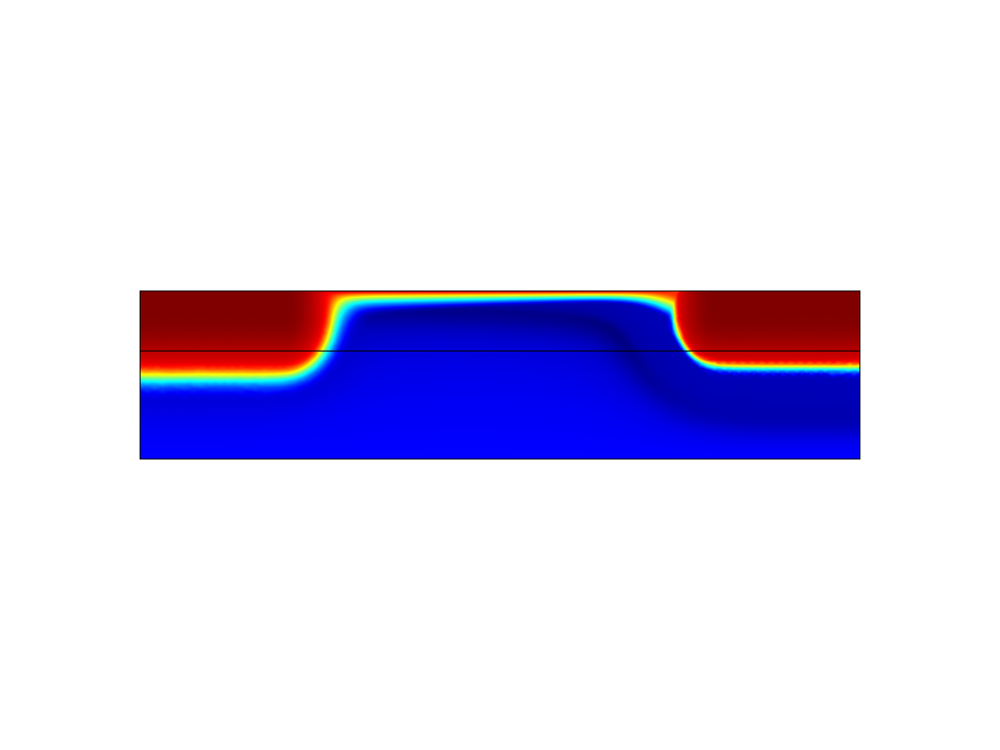
| Author | COMSOL |
| Report date | Nov 19, 2026 2:05:23 AM |
| 1. | Global Definitions | |||||
| 1.1. | Parameters 1 | |||||
| 2. | Component 1 | |||||
| 2.1. | Definitions | |||||
| 2.2. | Geometry 1 | |||||
| 2.3. | Materials | |||||
| 2.4. | Semiconductor | |||||
| 2.5. | Mesh 1 | |||||
| 3. | 研究 3 | |||||
| 3.1. | 批次掃瞄 1 | |||||
| 3.2. | Stationary | |||||
| 3.3. | Solver Configurations | |||||
| 4. | Results | |||||
| 4.1. | Data Sets | |||||
| 4.2. | Derived Values | |||||
| 4.3. | Tables | |||||
| 4.4. | Plot Groups | |||||
| Author | COMSOL |
| Date | Nov 17, 2026 1:56:01 AM |
| Name | Mosfet case.mph |
| Path | C:\Users\kiwi5\Desktop\半導體\mosfet_case.mph |
| COMSOL version | COMSOL 5.3 (Build: 316) |
| COMSOL Multiphysics |
| Semiconductor Module |
| Name | Expression | Value | Description |
|---|---|---|---|
| Vd | 10[mV] | 0.01 V | Drain voltage |
| Vg | 2[V] | 2 V | Gate voltage |
| tox | 30[nm] | 3E−8 m | Insulator Gate Thickness |
| Unit system | SI |
| Coordinate system type | Boundary system |
| Tag | sys1 |
| First | Second | Third |
|---|---|---|
| t1 | n | to |
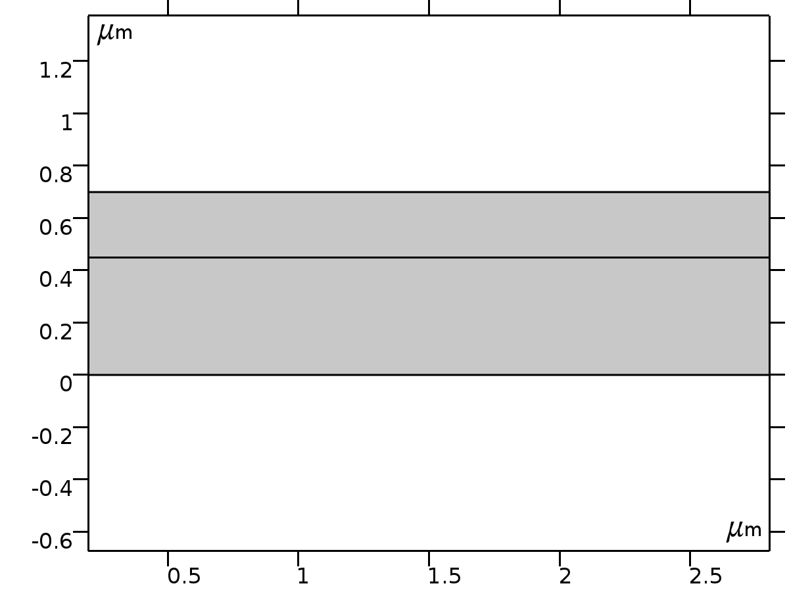
| Length unit | µm |
| Angular unit | deg |
| Description | Value |
|---|---|
| Space dimension | 2 |
| Number of domains | 2 |
| Number of boundaries | 11 |
| Number of vertices | 10 |
| Description | Value |
|---|---|
| Position | {0, 0} |
| Description | Value |
|---|---|
| Width | 3 |
| Height | 0.7 |
| Description | Value |
|---|---|
| Type | Closed curve |
| Description | Value |
|---|---|
| x | {0, 0, 0.5, 0.7, 2.3, 2.5, 3, 3} |
| y | {0.45, 0.7, 0.7, 0.7, 0.7, 0.7, 0.7, 0.45} |
| Geometric entity level | Domain |
| Selection | Domains 1–2 |
| Name | Value | Unit |
|---|---|---|
| Relative permittivity | 11.7 | 1 |
| Electron lifetime, SRH | 10[us] | s |
| Hole lifetime, SRH | 10[us] | s |
| Band gap | 1.12[V] | V |
| Electron affinity | 4.05[V] | V |
| Effective density of states, valence band | (T/300[K])^(3/2)*1.04e19[1/cm^3] | 1/m³ |
| Effective density of states, conduction band | (T/300[K])^(3/2)*2.8e19[1/cm^3] | 1/m³ |
| Electron mobility | 1450[cm^2/(V*s)] | m²/(V·s) |
| Hole mobility | 500[cm^2/(V*s)] | m²/(V·s) |
| Jain-Roulston coefficient (n-type), A | 3.5e-8[V] | V |
| Jain-Roulston coefficient (n-type), B | 0[V] | V |
| Jain-Roulston coefficient (n-type), C | 0[V] | V |
| Jain-Roulston coefficient (p-type), A | 3.5e-8[V] | V |
| Jain-Roulston coefficient (p-type), B | 0[V] | V |
| Jain-Roulston coefficient (p-type), C | 0[V] | V |
| Band-gap narrowing reference concentration | 1[1/cm^3] | 1/m³ |
| Conduction band fraction | 0.5 | 1 |
| Description | Value |
|---|---|
| Relative permittivity | {{11.7, 0, 0}, {0, 11.7, 0}, {0, 0, 11.7}} |
| Thermal conductivity | {{131[W/(m*K)], 0, 0}, {0, 131[W/(m*K)], 0}, {0, 0, 131[W/(m*K)]}} |
| Density | 2329[kg/m^3] |
| Heat capacity at constant pressure | 700[J/(kg*K)] |
| Description | Value |
|---|---|
| Electron mobility reference | 1252[cm^2/(V*s)] |
| Hole mobility reference | 407[cm^2/(V*s)] |
| Electron mobility reference minimum | 88[cm^2/(V*s)] |
| Hole mobility reference minimum | 54.3[cm^2/(V*s)] |
| Electron reference impurity concentration | 1.26e17[1/cm^3] |
| Hole reference impurity concentration | 2.35e17[1/cm^3] |
| Alpha coefficient | 0.88 |
| Mobility reference minimum exponent | -0.57 |
| Mobility reference exponent | -2.33 |
| Impurity concentration reference exponent | -2.33 |
| Alpha coefficient exponent | -0.146 |
| Reference temperature | 300[K] |
| Description | Value |
|---|---|
| Electron mobility reference | 1448[cm^2/(V*s)] |
| Hole mobility reference | 473[cm^2/(V*s)] |
| Electron exponent | 2.33 |
| Hole exponent | 2.23 |
| Reference temperature | 300[K] |
| Description | Value |
|---|---|
| Auger recombination factor, electrons | 2.8e-31[cm^6/s] |
| Auger recombination factor, holes | 9.9e-32[cm^6/s] |
| Description | Value |
|---|---|
| Direct recombination factor | 0[cm^3/s] |
| Description | Value |
|---|---|
| Electron lifetime, SRH | 10[us] |
| Hole lifetime, SRH | 10[us] |
| Description | Value |
|---|---|
| Fletcher mobility coefficient 1 | 1.04e21[1/(cm^1*V*s)] |
| Fletcher mobility coefficient 2 | 7.45e13[1/cm^2] |
| Reference temperature | 300[K] |
| Description | Value |
|---|---|
| Electron alpha coefficient | 1.11 |
| Hole alpha coefficient | 1.21 |
| Electron saturation velocity | 1e7[cm/s] |
| Hole saturation velocity | 8.37e6[cm/s] |
| Electron alpha exponent | 0.66 |
| Hole alpha exponent | 0.17 |
| Electron velocity saturation exponent | -0.87 |
| Hole velocity saturation exponent | -0.52 |
| Reference temperature | 300[K] |
| Description | Value |
|---|---|
| Band gap | 1.12[V] |
| Electron affinity | 4.05[V] |
| Effective density of states, valence band | (T/300[K])^(3/2)*1.04e19[1/cm^3] |
| Effective density of states, conduction band | (T/300[K])^(3/2)*2.8e19[1/cm^3] |
| Electron mobility | 1450[cm^2/(V*s)] |
| Hole mobility | 500[cm^2/(V*s)] |
| Description | Value |
|---|---|
| Electron delta coefficient | 5.82e14[V/s] |
| Hole delta coefficient | 2.05e14[V/s] |
| Electron mobility reference 1 | 4.75e7[cm^2/(V*s)] |
| Hole mobility reference 1 | 9.93e7[cm^2/(V*s)] |
| Electron mobility reference 2 | 1.74e5[cm^2/(V*s)] |
| Hole mobility reference 2 | 8.84e5[cm^2/(V*s)] |
| Electron alpha coefficient | 0.125 |
| Hole alpha coefficient | 0.0317 |
| Reference temperature | 1[K] |
| Electric field reference | 1[V/cm] |
| Doping concentration reference | 1[1/cm^3] |
| Description | Value |
|---|---|
| a factor, electrons, impact ionization | 0.426 |
| a factor, holes, impact ionization | 0.243 |
| b factor, electrons, impact ionization | 4.81E5[V/cm] |
| b factor, holes, impact ionization | 6.53E5[V/cm] |
| c factor, electrons, impact ionization | 3.05E-4 |
| c factor, holes, impact ionization | 5.35E-4 |
| d factor, electrons, impact ionization | 6.86E-4 |
| d factor, holes, impact ionization | 5.67E-4 |
| Description | Value |
|---|---|
| Band-gap narrowing reference energy | 0.00692[V] |
| Band-gap narrowing reference concentration | 1.3e17[1/cm^3] |
| Conduction band fraction | 0.5 |
| Description | Value |
|---|---|
| Jain-Roulston coefficient (n-type), A | 3.5e-8[V] |
| Jain-Roulston coefficient (n-type), B | 0[V] |
| Jain-Roulston coefficient (n-type), C | 0[V] |
| Jain-Roulston coefficient (p-type), A | 3.5e-8[V] |
| Jain-Roulston coefficient (p-type), B | 0[V] |
| Jain-Roulston coefficient (p-type), C | 0[V] |
| Band-gap narrowing reference concentration | 1[1/cm^3] |
| Conduction band fraction | 0.5 |
| COMSOL Multiphysics |
| Semiconductor Module |

| Geometric entity level | Domain |
| Selection | Domains 1–2 |
| Description | Value |
|---|---|
| Formulation | Finite volume (constant shape function) |
| Value type when using splitting of complex variables | {Complex, Complex, Complex} |
| Reference temperature for energy levels | 293.15[K] |
| Carrier statistics | Fermi - Dirac |
| Solution | Electrons and holes |
| Interface continuation parameter | 1 |
| Doping and trap density continuation parameter | No continuation |
| Name | Expression | Unit | Description | Selection |
|---|---|---|---|---|
| semi.min_h | nojac(semi.minsemi(sqrt(sqrt(1/emetric2)))) | m | Minimum element size | Global |
| semi.ngX | nX | 1 | Exterior normal vector, X component | Boundary 4 |
| semi.ngY | nY | 1 | Exterior normal vector, Y component | Boundary 4 |
| semi.ngZ | 0 | 1 | Exterior normal vector, Z component | Boundary 4 |
| semi.ngX | dnX | 1 | Exterior normal vector, X component | Boundaries 1–3, 5–11 |
| semi.ngY | dnY | 1 | Exterior normal vector, Y component | Boundaries 1–3, 5–11 |
| semi.ngZ | 0 | 1 | Exterior normal vector, Z component | Boundaries 1–3, 5–11 |
| semi.dngX | dnX | 1 | Down normal vector on mesh boundaries, X component | Global |
| semi.dngY | dnY | 1 | Down normal vector on mesh boundaries, Y component | Global |
| semi.dngZ | 0 | 1 | Down normal vector on mesh boundaries, Z component | Global |
| semi.ungX | unX | 1 | Up normal vector on mesh boundaries, X component | Global |
| semi.ungY | unY | 1 | Up normal vector on mesh boundaries, Y component | Global |
| semi.ungZ | 0 | 1 | Up normal vector on mesh boundaries, Z component | Global |
| semi.rX | X | m | Position vector, X component | Global |
| semi.rY | Y | m | Position vector, Y component | Global |
| semi.rZ | 0 | m | Position vector, Z component | Global |
| semi.dc_down | down(semi.rX-circumcenter(semi.rX[1/m])[m])*semi.dngX+down(semi.rY-circumcenter(semi.rY[1/m])[m])*semi.dngY+down(semi.rZ-circumcenter(semi.rZ[1/m])[m])*semi.dngZ | m | Local boundary mesh distance, downside element | Global |
| semi.dc_up | up(semi.rX-circumcenter(semi.rX[1/m])[m])*semi.ungX+up(semi.rY-circumcenter(semi.rY[1/m])[m])*semi.ungY+up(semi.rZ-circumcenter(semi.rZ[1/m])[m])*semi.ungZ | m | Local boundary mesh distance, upside element | Global |
| semi.global_flux_tol_cd | 1.0E-4 | 1 | Global tolerance for finite volume fluxes (variable is replaced in subsequent semiconductor material model or charge conservation features) | Global |
| semi.dc_tol | semi.min_h*semi.global_flux_tol_cd | m | Local boundary mesh distance tolerance | Global |
| semi.dc_n | if(abs(semi.dc_n_bnd)<semi.dc_tol,if(sign(semi.dc_n_bnd)==0,semi.dc_tol,sign(semi.dc_n_bnd)*semi.dc_tol),semi.dc_n_bnd) | m | Local exterior boundary distance at domain edge, (numerical) | Boundaries 1–3, 5–11 |
| semi.dc_n_bnd | down(semi.rX-circumcenter(semi.rX[1/m])[m])*semi.ngX+down(semi.rY-circumcenter(semi.rY[1/m])[m])*semi.ngY+down(semi.rZ-circumcenter(semi.rZ[1/m])[m])*semi.ngZ | m | Local exterior boundary distance at domain edge | Boundaries 1–3, 5–11 |
| semi.dc_down_bnd | if(abs(semi.dc_down)<semi.dc_tol,if(sign(semi.dc_down)==0,semi.dc_tol,sign(semi.dc_down)*semi.dc_tol),semi.dc_down) | m | Local boundary mesh distance, downside element (used on boundaries) | Global |
| semi.dc_up_bnd | if(abs(semi.dc_up)<semi.dc_tol,if(sign(semi.dc_up)==0,semi.dc_tol,sign(semi.dc_up)*semi.dc_tol),semi.dc_up) | m | Local boundary mesh distance, upside element (used on boundaries) | Global |
| semi.dc_tot | if(abs(semi.dc_down+semi.dc_up)<semi.dc_tol,if(sign(semi.dc_down+semi.dc_up)==0,semi.dc_tol,sign(semi.dc_down+semi.dc_up)*semi.dc_tol),semi.dc_down+semi.dc_up) | m | Distance between circumcenters at interior boundary, (numerical) | Global |
| semi.epsilonr_down | down(semi.epsilonrs) | 1 | Equivalent relative permittivity, downside | Global |
| semi.epsilonr_up | up(semi.epsilonrs) | 1 | Equivalent relative permittivity, upside | Global |
| semi.E_cd_denom | semi.epsilonr_down*semi.dc_up+semi.epsilonr_up*semi.dc_down | m | Denominator for centered difference scheme | Global |
| semi.E_cd_denom_num | if(abs(semi.E_cd_denom)<semi.dc_tol,if(sign(semi.E_cd_denom)==0,semi.dc_tol,sign(semi.E_cd_denom)*semi.dc_tol),semi.E_cd_denom) | m | Numerical denominator for centered difference scheme | Global |
| semi.Dcd | epsilon0_const*semi.epsilonr_down*semi.epsilonr_up*(down(V)-up(V))/semi.E_cd_denom_num | C/m² | Normal component of the electric displacement field | Global |
| semi.E_down | semi.Dcd/(epsilon0_const*semi.epsilonr_down) | V/m | Normal component of the electric field in the down direction | Global |
| semi.E_up | semi.Dcd/(epsilon0_const*semi.epsilonr_up) | V/m | Normal component of the electric field in the up direction | Global |
| semi.D_bnd_down | epsilon0_const*semi.epsilonr_down*(down(V)-semi.nV)/semi.dc_down_bnd | C/m² | Normal component of the electric displacement field in the down direction | Boundaries 1–11 |
| semi.D_bnd_up | epsilon0_const*semi.epsilonr_up*(up(V)-semi.nV)/semi.dc_up_bnd | C/m² | Normal component of the electric displacement field in the up direction | Boundaries 1–11 |
| semi.EX | semi.DX/(semi.epsilonrs*epsilon0_const) | V/m | Electric field, X component | Domains 1–2 |
| semi.EY | semi.DY/(semi.epsilonrs*epsilon0_const) | V/m | Electric field, Y component | Domains 1–2 |
| semi.EZ | 0 | V/m | Electric field, Z component | Domains 1–2 |
| semi.T0 | 293.15[K] | K | Reference temperature for energy levels | Domains 1–2 |
| semi.epsilonrs | (semi.epsilonrXX+semi.epsilonrYY+semi.epsilonrZZ)/3 | 1 | Relative permittivity, scalar | Domains 1–2 |
| semi.rho | 0 | C/m³ | Space charge density | Domains 1–2 |
| semi.rho_s | 0 | C/m² | Surface charge density | Boundaries 1–11 |
| semi.nV | (semi.epsilonr_down*semi.dc_up*down(V)+semi.epsilonr_up*semi.dc_down*up(V)+semi.dc_down*semi.dc_up*semi.rho_s/epsilon0_const)/semi.E_cd_denom_num | V | Electric potential at boundary | Boundary 4 |
| semi.d | 1.0E-6[m] | m | Out-of-plane thickness | Domains 1–2 |
| semi.gamma_n | exp(semi.log_FD_half(semi.eta_n)-semi.eta_n) | 1 | Electron degeneracy factor | Domains 1–2 |
| semi.Gn | exp(semi.log_FD_half(semi.eta_n)-semi.log_FD_minushalf(semi.eta_n)) | 1 | Electron degeneracy function | Domains 1–2 |
| semi.Qthn | 2*semi.Vth*semi.mun*exp(semi.log_FD_one(semi.eta_n)-semi.log_FD_zero(semi.eta_n)) | m²/s | Electron non-equilibrium contribution to the thermal diffusion coefficient | Domains 1–2 |
| semi.logx_n | log(Ne/semi.Nc) | 1 | Log of N/Nc | Domains 1–2 |
| semi.eta_n | if(Ne/semi.Nc<exp(-100),-101,semi.log_FD_half_inv(semi.logx_n)) | 1 | Inverse Fermi-Dirac function, electrons | Domains 1–2 |
| semi.gamma_p | exp(semi.log_FD_half(semi.eta_p)-semi.eta_p) | 1 | Hole degeneracy factor | Domains 1–2 |
| semi.Gp | exp(semi.log_FD_half(semi.eta_p)-semi.log_FD_minushalf(semi.eta_p)) | 1 | Hole degeneracy function | Domains 1–2 |
| semi.Qthp | 2*semi.Vth*semi.mup*exp(semi.log_FD_one(semi.eta_p)-semi.log_FD_zero(semi.eta_p)) | m²/s | Hole non-equilibrium contribution to the thermal diffusion coefficient | Domains 1–2 |
| semi.logx_p | log(Ph/semi.Nv) | 1 | Log of P/Nv | Domains 1–2 |
| semi.eta_p | if(Ph/semi.Nv<exp(-100),-101,semi.log_FD_half_inv(semi.logx_p)) | 1 | Inverse Fermi-Dirac function, holes | Domains 1–2 |
| semi.cp | 1 | 1 | Interface continuation parameter | Domains 1–2 |
| semi.cp_dtd | 1 | 1 | Doping and trap density continuation parameter | Domains 1–2 |
| semi.nX | nX | Normal vector, X component | Boundary 4 | |
| semi.nY | nY | Normal vector, Y component | Boundary 4 | |
| semi.nZ | 0 | Normal vector, Z component | Boundary 4 | |
| semi.nX | dnX | Normal vector, X component | Boundaries 1–3, 5–11 | |
| semi.nY | dnY | Normal vector, Y component | Boundaries 1–3, 5–11 | |
| semi.nZ | 0 | Normal vector, Z component | Boundaries 1–3, 5–11 | |
| semi.nmeshX | nXmesh | Mesh normal vector, X component | Boundary 4 | |
| semi.nmeshY | nYmesh | Mesh normal vector, Y component | Boundary 4 | |
| semi.nmeshZ | 0 | Mesh normal vector, Z component | Boundary 4 | |
| semi.nmeshX | dnXmesh | Mesh normal vector, X component | Boundaries 1–3, 5–11 | |
| semi.nmeshY | dnYmesh | Mesh normal vector, Y component | Boundaries 1–3, 5–11 | |
| semi.nmeshZ | 0 | Mesh normal vector, Z component | Boundaries 1–3, 5–11 | |
| semi.unmeshX | unXmesh | Mesh normal vector, upside, X component | Boundary 4 | |
| semi.unmeshY | unYmesh | Mesh normal vector, upside, Y component | Boundary 4 | |
| semi.unmeshZ | 0 | Mesh normal vector, upside, Z component | Boundary 4 | |
| semi.dnmeshX | dnXmesh | Mesh normal vector, downside, X component | Boundary 4 | |
| semi.dnmeshY | dnYmesh | Mesh normal vector, downside, Y component | Boundary 4 | |
| semi.dnmeshZ | 0 | Mesh normal vector, downside, Z component | Boundary 4 | |
| semi.Vref | semi.Vref_local | V | Reference potential | Point 1 |
| semi.Vref_global | semi.intsemi(semi.Vref) | V | Reference potential, global | Global |
| Weak expression | Integration order | Integration frame | Selection |
|---|---|---|---|
| semi.Dcd*test(down(V)-up(V))*semi.d | 0 | Material | Mesh boundaries on domains 1–2 |
| (semi.D_bnd_up*test(up(V))+semi.D_bnd_down*test(down(V)))*semi.d | 0 | Material | Boundary 4 |
| -test(V)*semi.rho*semi.d | 0 | Material | Domains 1–2 |
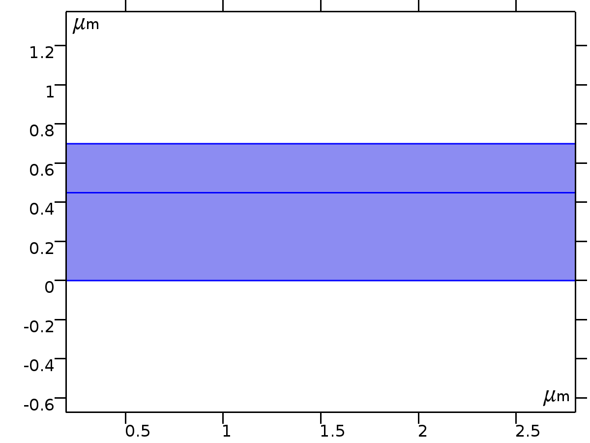
Semiconductor Material Model 1
| Geometric entity level | Domain |
| Selection | Domains 1–2 |
| Description | Value |
|---|---|
| Electron mobility | From material |
| Hole mobility | From material |
| Relative permittivity | From material |
| Band gap | From material |
| Electron affinity | From material |
| Effective density of states, conduction band | From material |
| Effective density of states, valence band | From material |
| Band gap narrowing | Jain - Roulston model |
| Conduction band fraction | From material |
| Jain-Roulston coefficient (n-type), A | From material |
| Jain-Roulston coefficient (n-type), B | From material |
| Jain-Roulston coefficient (n-type), C | From material |
| Jain-Roulston coefficient (p-type), A | From material |
| Jain-Roulston coefficient (p-type), B | From material |
| Jain-Roulston coefficient (p-type), C | From material |
| Band-gap narrowing reference concentration | From material |
| Dopant ionization | Complete ionization |
| Temperature | User defined |
| Temperature | 293.15[K] |
| Property | Material | Property group |
|---|---|---|
| Electron mobility | Si - Silicon | Semiconductor material |
| Hole mobility | Si - Silicon | Semiconductor material |
| Relative permittivity | Si - Silicon | Basic |
| Band gap | Si - Silicon | Semiconductor material |
| Electron affinity | Si - Silicon | Semiconductor material |
| Effective density of states, conduction band | Si - Silicon | Semiconductor material |
| Effective density of states, valence band | Si - Silicon | Semiconductor material |
| Conduction band fraction | Si - Silicon | Jain-Roulston model |
| Jain-Roulston coefficient (n-type), A | Si - Silicon | Jain-Roulston model |
| Jain-Roulston coefficient (n-type), B | Si - Silicon | Jain-Roulston model |
| Jain-Roulston coefficient (n-type), C | Si - Silicon | Jain-Roulston model |
| Jain-Roulston coefficient (p-type), A | Si - Silicon | Jain-Roulston model |
| Jain-Roulston coefficient (p-type), B | Si - Silicon | Jain-Roulston model |
| Jain-Roulston coefficient (p-type), C | Si - Silicon | Jain-Roulston model |
| Band-gap narrowing reference concentration | Si - Silicon | Jain-Roulston model |
| Name | Expression | Unit | Description | Selection |
|---|---|---|---|---|
| semi.N | Ne | 1/m³ | Electron concentration | Domains 1–2 |
| semi.P | Ph | 1/m³ | Hole concentration | Domains 1–2 |
| semi.rho | e_const*(semi.P-semi.N+semi.Ndoping) | C/m³ | Space charge density | Domains 1–2 |
| semi.V_init | semi.Vth_init*(-log(semi.p_init/semi.ni_init)*(semi.Ndoping_init<0)+log(semi.n_init/semi.ni_init)*(semi.Ndoping_init>=0))-semi.chi_init-0.5*semi.Eg_init+0.5*semi.Vth_init*log(semi.Nv_init/semi.Nc_init) | V | Initial electric potential | Domains 1–2 |
| semi.chi_init | subst(semi.chi_semi,semi.Tl,semi.T0) | V | Electron affinity for initialization | Domains 1–2 |
| semi.Nd | 4*eps | 1/m³ | Donor concentration | Domains 1–2 |
| semi.Na | 3*eps | 1/m³ | Acceptor concentration | Domains 1–2 |
| semi.Un | 0 | 1/(m³·s) | Recombination rate for electrons | Domains 1–2 |
| semi.Up | 0 | 1/(m³·s) | Recombination rate for holes | Domains 1–2 |
| semi.nJn | 0 | A/m² | Outward normal electron current density | Boundaries 1–3, 5–11 |
| semi.nJp | 0 | A/m² | Outward normal hole current density | Boundaries 1–3, 5–11 |
| semi.Dn_down | down(semi.mun)*semi.Vth*down(semi.Gn) | m²/s | SG down electron diffusion coefficient | Global |
| semi.Dn_up | up(semi.mun)*semi.Vth*up(semi.Gn) | m²/s | SG up electron diffusion coefficient | Global |
| semi.Dp_down | down(semi.mup)*semi.Vth*down(semi.Gp) | m²/s | SG down hole diffusion coefficient | Global |
| semi.Dp_up | up(semi.mup)*semi.Vth*up(semi.Gp) | m²/s | SG up hole diffusion coefficient | Global |
| semi.Qthn_down | 2*semi.Vth*down(semi.mun) | m²/s | Electron non-equilibrium contribution to the thermal diffusion coefficient, downside | Global |
| semi.Qthn_up | 2*semi.Vth*up(semi.mun) | m²/s | Electron non-equilibrium contribution to the thermal diffusion coefficient, upside | Global |
| semi.Qthp_down | 2*semi.Vth*down(semi.mup) | m²/s | Hole non-equilibrium contribution to the thermal diffusion coefficient, downside | Global |
| semi.Qthp_up | 2*semi.Vth*up(semi.mup) | m²/s | Hole non-equilibrium contribution to the thermal diffusion coefficient, upside | Global |
| semi.Dn_th_down | semi.Qthn_down-1.5*semi.Dn_down | m²/s | Electron thermal diffusion coefficient, downside | Global |
| semi.Dn_th_up | semi.Qthn_up-1.5*semi.Dn_up | m²/s | Electron thermal diffusion coefficient, upside | Global |
| semi.Dp_th_down | semi.Qthp_down-1.5*semi.Dp_down | m²/s | Hole thermal diffusion coefficient, downside | Global |
| semi.Dp_th_up | semi.Qthp_up-1.5*semi.Dp_up | m²/s | Hole thermal diffusion coefficient, upside | Global |
| semi.Vn_down | down(semi.mun)*semi.E_down-down(semi.mun)*(d(semi.chi_semi,X)*semi.dngX+d(semi.chi_semi,Y)*semi.dngY)+semi.Dn_th_down*(d(semi.Tl,X)*semi.dngX+d(semi.Tl,Y)*semi.dngY)/semi.Tl | m/s | SG down electron conservative convective velocity | Global |
| semi.Vn_up | up(semi.mun)*semi.E_up-up(semi.mun)*(d(semi.chi_semi,X)*semi.ungX+d(semi.chi_semi,Y)*semi.ungY)+semi.Dn_th_up*(d(semi.Tl,X)*semi.ungX+d(semi.Tl,Y)*semi.ungY)/semi.Tl | m/s | SG up electron conservative convective velocity | Global |
| semi.Vp_down | down(semi.mup)*semi.E_down-down(semi.mup)*((d(semi.chi_semi,X)+d(semi.Eg,X))*semi.dngX+(d(semi.chi_semi,Y)+d(semi.Eg,Y))*semi.dngY)-semi.Dp_th_down*(d(semi.Tl,X)*semi.dngX+d(semi.Tl,Y)*semi.dngY)/semi.Tl | m/s | SG down hole conservative convective velocity | Global |
| semi.Vp_up | up(semi.mup)*semi.E_up-up(semi.mup)*((d(semi.chi_semi,X)+d(semi.Eg,X))*semi.ungX+(d(semi.chi_semi,Y)+d(semi.Eg,Y))*semi.ungY)-semi.Dp_th_up*(d(semi.Tl,X)*semi.ungX+d(semi.Tl,Y)*semi.ungY)/semi.Tl | m/s | SG up hole conservative convective velocity | Global |
| semi.An | exp(semi.An_expo) | 1 | SG down exponential term for electrons | Global |
| semi.Bn | exp(semi.Bn_expo) | 1 | SG up exponential term for electrons | Global |
| semi.Ap | exp(semi.Ap_expo) | 1 | SG down exponential term for holes | Global |
| semi.Bp | exp(semi.Bp_expo) | 1 | SG up exponential term for holes | Global |
| semi.An_expo | -semi.Vn_down*semi.dc_down/semi.Dn_down | 1 | SG down exponent for electrons | Global |
| semi.Bn_expo | semi.Vn_up*semi.dc_up/semi.Dn_up | 1 | SG up exponent for electrons | Global |
| semi.Ap_expo | semi.Vp_down*semi.dc_down/semi.Dp_down | 1 | SG down exponent for holes | Global |
| semi.Bp_expo | -semi.Vp_up*semi.dc_up/semi.Dp_up | 1 | SG up exponent for holes | Global |
| semi.nJn_sg | if(abs(semi.An_expo)<semi.global_flux_tol_sg||abs(semi.Bn_expo)<semi.global_flux_tol_sg,semi.nCn,semi.nSGn) | A/m² | Normal current for electrons | Global |
| semi.nJp_sg | if(abs(semi.Ap_expo)<semi.global_flux_tol_sg||abs(semi.Bp_expo)<semi.global_flux_tol_sg,semi.nCp,semi.nSGp) | A/m² | Normal current for holes | Global |
| semi.nSGn | -e_const*semi.Vn_down*(up(semi.N)*semi.Bn-down(semi.N)*semi.An)/semi.nSGn_denom_num | A/m² | SG normal current for electrons | Global |
| semi.nSGp | -e_const*semi.Vp_down*(up(semi.P)*semi.Bp-down(semi.P)*semi.Ap)/semi.nSGp_denom_num | A/m² | SG normal current for holes | Global |
| semi.nSGn_denom | -1+semi.Vn_down*(1-semi.Bn)/semi.Vn_up+semi.An | 1 | Denominator for SG normal current for electrons | Global |
| semi.nSGp_denom | -1+semi.Vp_down*(1-semi.Bp)/semi.Vp_up+semi.Ap | 1 | Denominator for SG normal current for holes | Global |
| semi.nSGn_denom_num | if(abs(semi.nSGn_denom)<semi.global_flux_tol_sg,if(sign(semi.nSGn_denom)==0,semi.global_flux_tol_sg,sign(semi.nSGn_denom)*semi.global_flux_tol_sg),semi.nSGn_denom) | 1 | Numerical denominator for SG normal current for electrons | Global |
| semi.nSGp_denom_num | if(abs(semi.nSGp_denom)<semi.global_flux_tol_sg,if(sign(semi.nSGp_denom)==0,semi.global_flux_tol_sg,sign(semi.nSGp_denom)*semi.global_flux_tol_sg),semi.nSGp_denom) | 1 | Numerical denominator for SG normal current for holes | Global |
| semi.nCn | e_const*(-semi.Dn_down*(down(semi.N)-up(semi.N))/semi.nCn_denom_num+0.5*(down(semi.N)*(semi.dc_down*(semi.dc_down+2*semi.dc_up*semi.Dn_down/semi.Dn_up)*semi.Vn_down+semi.Vn_up*(semi.dc_up*semi.Dn_down/semi.Dn_up)^2)+up(semi.N)*(semi.dc_down^2*semi.Vn_down+semi.dc_up*semi.Dn_down*(2*semi.dc_down+semi.dc_up*semi.Dn_down/semi.Dn_up)*semi.Vn_up/semi.Dn_up))/semi.nCn_denom_num^2) | A/m² | Centered difference normal current for electrons | Global |
| semi.nCp | e_const*(semi.Dp_down*(down(semi.P)-up(semi.P))/semi.nCp_denom_num+0.5*(down(semi.P)*(semi.dc_down*(semi.dc_down+2*semi.dc_up*semi.Dp_down/semi.Dp_up)*semi.Vp_down+semi.Vp_up*(semi.dc_up*semi.Dp_down/semi.Dp_up)^2)+up(semi.P)*(semi.dc_down^2*semi.Vp_down+semi.dc_up*semi.Dp_down*(2*semi.dc_down+semi.dc_up*semi.Dp_down/semi.Dp_up)*semi.Vp_up/semi.Dp_up))/semi.nCp_denom_num^2) | A/m² | Centered difference normal current for holes | Global |
| semi.nCn_denom | semi.dc_down+semi.dc_up*semi.Dn_down/semi.Dn_up | m | Denominator for centered difference normal current for electrons | Global |
| semi.nCp_denom | semi.dc_down+semi.dc_up*semi.Dp_down/semi.Dp_up | m | Denominator for centered difference normal current for holes | Global |
| semi.nCn_denom_num | if(abs(semi.nCn_denom)<semi.nC_denom_tol,if(sign(semi.nCn_denom)==0,semi.nC_denom_tol,sign(semi.nCn_denom)*semi.nC_denom_tol),semi.nCn_denom) | m | Numerical denominator for centered difference normal current for electrons | Global |
| semi.nCp_denom_num | if(abs(semi.nCp_denom)<semi.nC_denom_tol,if(sign(semi.nCp_denom)==0,semi.nC_denom_tol,sign(semi.nCp_denom)*semi.nC_denom_tol),semi.nCp_denom) | m | Numerical denominator for centered difference normal current for holes | Global |
| semi.nC_denom_tol | semi.min_h*semi.global_flux_tol_cd | m | Tolerance for centered difference normal current denominator | Domains 1–2 |
| semi.global_flux_tol_sg | eps | 1 | Global tolerance for finite volume fluxes (variable is replaced in subsequent semiconductor material model or charge conservation features) | Global |
| semi.Jn_th_post_mesh | e_const*semi.Dn_th_down*(d(semi.Tl,X)*semi.dngX+d(semi.Tl,Y)*semi.dngY)*down(semi.N)/semi.Tl | A/m² | Mesh boundary flux for elshdivvar element | Global |
| semi.Jn_th_post_ext_down | e_const*semi.bc_Dn_th*(d(semi.Tl,X)*semi.ngX+d(semi.Tl,Y)*semi.ngY)*semi.N/semi.Tl | A/m² | Exterior downside flux for elshdivvar element | Boundaries 1–3, 5–11 |
| semi.Jn_th_post_ext_up | e_const*semi.Dn_th_up*(d(semi.Tl,X)*semi.ungX+d(semi.Tl,Y)*semi.ungY)*up(semi.N)/semi.Tl | A/m² | Exterior upside flux for elshdivvar element | Boundaries 1–3, 5–11 |
| semi.Jn_th_post_int_down | e_const*semi.Dn_th_down*(d(semi.Tl,X)*semi.dngX+d(semi.Tl,Y)*semi.dngY)*down(semi.N)/semi.Tl | A/m² | Interior downside flux for elshdivvar element | Boundary 4 |
| semi.Jn_th_post_int_up | e_const*semi.Dn_th_up*(d(semi.Tl,X)*semi.dngX+d(semi.Tl,Y)*semi.dngY)*up(semi.N)/semi.Tl | A/m² | Interior upside flux for elshdivvar element | Boundary 4 |
| semi.Jp_th_post_mesh | -e_const*semi.Dp_th_down*(d(semi.Tl,X)*semi.dngX+d(semi.Tl,Y)*semi.dngY)*down(semi.P)/semi.Tl | A/m² | Mesh boundary flux for elshdivvar element | Global |
| semi.Jp_th_post_ext_down | -e_const*semi.bc_Dp_th*(d(semi.Tl,X)*semi.ngX+d(semi.Tl,Y)*semi.ngY)*semi.P/semi.Tl | A/m² | Exterior downside flux for elshdivvar element | Boundaries 1–3, 5–11 |
| semi.Jp_th_post_ext_up | -e_const*semi.bc_Dp_th*(d(semi.Tl,X)*semi.ngX+d(semi.Tl,Y)*semi.ngY)*semi.P/semi.Tl | A/m² | Exterior upside flux for elshdivvar element | Boundaries 1–3, 5–11 |
| semi.Jp_th_post_int_down | -e_const*semi.Dp_th_down*(d(semi.Tl,X)*semi.dngX+d(semi.Tl,Y)*semi.dngY)*down(semi.P)/semi.Tl | A/m² | Interior downside flux for elshdivvar element | Boundary 4 |
| semi.Jp_th_post_int_up | -e_const*semi.Dp_th_up*(d(semi.Tl,X)*semi.dngX+d(semi.Tl,Y)*semi.dngY)*up(semi.P)/semi.Tl | A/m² | Interior upside flux for elshdivvar element | Boundary 4 |
| semi.Jn_drift_post_mesh | e_const*down(semi.mun)*(semi.E_down-d(semi.chi_semi,X)*semi.dngX-d(semi.chi_semi,Y)*semi.dngY)*down(semi.N) | A/m² | Mesh boundary flux for elshdivvar element | Global |
| semi.Jn_drift_post_ext_down | e_const*down(semi.mun)*(if(isdefined(semi.nE),semi.nE,(down(V)-semi.nV)/semi.dc_down)-d(semi.chi_semi,X)*semi.dngX-d(semi.chi_semi,Y)*semi.dngY)*down(semi.N) | A/m² | Exterior downside flux for elshdivvar element | Boundaries 1–3, 5–11 |
| semi.Jn_drift_post_ext_up | e_const*up(semi.mun)*(if(isdefined(semi.nE),semi.nE,(-up(V)+semi.nV)/semi.dc_up)-d(semi.chi_semi,X)*semi.ungX-d(semi.chi_semi,Y)*semi.ungY)*up(semi.N) | A/m² | Exterior upside flux for elshdivvar element | Boundaries 1–3, 5–11 |
| semi.Jn_drift_post_int_down | e_const*down(semi.mun)*(semi.E_down-d(semi.chi_semi,X)*semi.dngX-d(semi.chi_semi,Y)*semi.dngY)*down(semi.N) | A/m² | Interior downside flux for elshdivvar element | Boundary 4 |
| semi.Jn_drift_post_int_up | e_const*up(semi.mun)*(semi.E_up-d(semi.chi_semi,X)*semi.ungX-d(semi.chi_semi,Y)*semi.ungY)*up(semi.N) | A/m² | Interior upside flux for elshdivvar element | Boundary 4 |
| semi.Jp_drift_post_mesh | e_const*down(semi.mup)*(semi.E_down-d(semi.chi_semi,X)*semi.dngX-d(semi.chi_semi,Y)*semi.dngY-d(semi.Eg,X)*semi.dngX-d(semi.Eg,Y)*semi.dngY)*down(semi.P) | A/m² | Mesh boundary flux for elshdivvar element | Global |
| semi.Jp_drift_post_ext_down | e_const*down(semi.mup)*(if(isdefined(semi.nE),semi.nE,(down(V)-semi.nV)/semi.dc_down)-d(semi.chi_semi,X)*semi.dngX-d(semi.chi_semi,Y)*semi.dngY-d(semi.Eg,X)*semi.dngX-d(semi.Eg,Y)*semi.dngY)*down(semi.P) | A/m² | Exterior downside flux for elshdivvar element | Boundaries 1–3, 5–11 |
| semi.Jp_drift_post_ext_up | e_const*up(semi.mup)*(if(isdefined(semi.nE),semi.nE,(up(V)-semi.nV)/semi.dc_up)-d(semi.chi_semi,X)*semi.ungX-d(semi.chi_semi,Y)*semi.ungY-d(semi.Eg,X)*semi.ungX-d(semi.Eg,Y)*semi.ungY)*up(semi.P) | A/m² | Exterior upside flux for elshdivvar element | Boundaries 1–3, 5–11 |
| semi.Jp_drift_post_int_down | e_const*down(semi.mup)*(semi.E_down-d(semi.chi_semi,X)*semi.dngX-d(semi.chi_semi,Y)*semi.dngY-d(semi.Eg,X)*semi.dngX-d(semi.Eg,Y)*semi.dngY)*down(semi.P) | A/m² | Interior downside flux for elshdivvar element | Boundary 4 |
| semi.Jp_drift_post_int_up | e_const*up(semi.mup)*(semi.E_up-d(semi.chi_semi,X)*semi.ungX-d(semi.chi_semi,Y)*semi.ungY-d(semi.Eg,X)*semi.ungX-d(semi.Eg,Y)*semi.ungY)*up(semi.P) | A/m² | Interior upside flux for elshdivvar element | Boundary 4 |
| semi.Jn_diff_post_mesh | semi.nJn_sg-e_const*semi.Vn_down*down(semi.N) | A/m² | Mesh boundary flux for elshdivvar element | Global |
| semi.Jn_diff_post_ext_down | semi.nJn-e_const*semi.bc_Vn*semi.N | A/m² | Exterior downside flux for elshdivvar element | Boundaries 1–3, 5–11 |
| semi.Jn_diff_post_ext_up | semi.nJn-e_const*semi.bc_Vn*semi.N | A/m² | Exterior upside flux for elshdivvar element | Boundaries 1–3, 5–11 |
| semi.Jn_diff_post_int_down | semi.nJn_sg-e_const*semi.Vn_down*down(semi.N) | A/m² | Interior downside flux for elshdivvar element | Boundary 4 |
| semi.Jn_diff_post_int_up | semi.nJn_sg-e_const*semi.Vn_up*up(semi.N) | A/m² | Interior upside flux for elshdivvar element | Boundary 4 |
| semi.Jp_diff_post_mesh | semi.nJp_sg-e_const*semi.Vp_down*down(semi.P) | A/m² | Mesh boundary flux for elshdivvar element | Global |
| semi.Jp_diff_post_ext_down | semi.nJp-e_const*semi.bc_Vp*semi.P | A/m² | Exterior downside flux for elshdivvar element | Boundaries 1–3, 5–11 |
| semi.Jp_diff_post_ext_up | semi.nJp-e_const*semi.bc_Vp*semi.P | A/m² | Exterior upside flux for elshdivvar element | Boundaries 1–3, 5–11 |
| semi.Jp_diff_post_int_down | semi.nJp_sg-e_const*semi.Vp_down*down(semi.P) | A/m² | Interior downside flux for elshdivvar element | Boundary 4 |
| semi.Jp_diff_post_int_up | semi.nJp_sg-e_const*semi.Vp_up*up(semi.P) | A/m² | Interior upside flux for elshdivvar element | Boundary 4 |
| semi.Jn_post_mesh | semi.nJn_sg | A/m² | Mesh boundary flux for elshdivvar element | Global |
| semi.Jn_post_ext_down | semi.nJn | A/m² | Exterior downside flux for elshdivvar element | Boundaries 1–3, 5–11 |
| semi.Jn_post_ext_up | -semi.nJn | A/m² | Exterior upside flux for elshdivvar element | Boundaries 1–3, 5–11 |
| semi.Jn_post_int_down | semi.nJn_int | A/m² | Interior downside flux for elshdivvar element | Boundary 4 |
| semi.Jn_post_int_up | semi.nJn_int | A/m² | Interior upside flux for elshdivvar element | Boundary 4 |
| semi.Jp_post_mesh | semi.nJp_sg | A/m² | Mesh boundary flux for elshdivvar element | Global |
| semi.Jp_post_ext_down | semi.nJp | A/m² | Exterior downside flux for elshdivvar element | Boundaries 1–3, 5–11 |
| semi.Jp_post_ext_up | -semi.nJp | A/m² | Exterior upside flux for elshdivvar element | Boundaries 1–3, 5–11 |
| semi.Jp_post_int_down | semi.nJp_int | A/m² | Interior downside flux for elshdivvar element | Boundary 4 |
| semi.Jp_post_int_up | semi.nJp_int | A/m² | Interior upside flux for elshdivvar element | Boundary 4 |
| semi.mun | material.mun | m²/(V·s) | Electron mobility | Domains 1–2 |
| semi.mup | material.mup | m²/(V·s) | Hole mobility | Domains 1–2 |
| semi.log10N | log10(semi.N/1[1/cm^3]) | 1 | Log of electron concentration | Domains 1–2 |
| semi.log10P | log10(semi.P/1[1/cm^3]) | 1 | Log of hole concentration | Domains 1–2 |
| semi.Tl | semi.smm1.minput_temperature | K | Lattice temperature | Domains 1–2 |
| semi.Vth_init | semi.Vth_T0 | V | Thermal potential for initialization | Domains 1–2 |
| semi.Vth | k_B_const*semi.Tl/e_const | V | Thermal potential | Domains 1–2 |
| semi.Vth_T0 | k_B_const*semi.T0/e_const | V | Thermal potential at equilibrium reference temperature | Domains 1–2 |
| semi.V_eq | -0.5*semi.Eg-semi.V_eq_adj-semi.chi_semi+semi.Vth*(0.5*log(semi.Nv/semi.Nc)-if(semi.Ndoping<0,log(semi.p_eq/(semi.gamma_p*sqrt(semi.Nc*semi.Nv)))+0.5*semi.Eg/semi.Vth,-log(semi.n_eq/(semi.gamma_n*sqrt(semi.Nc*semi.Nv)))-0.5*semi.Eg/semi.Vth)) | V | Equilibrium electric potential | Domains 1–2 |
| semi.V_eq_adj | 0.5*(semi.Eg0_T0-semi.Eg0)+semi.chi0_T0-semi.chi0+0.5*(semi.Vth*log(semi.Nv/semi.Nc)-semi.Vth_T0*log(semi.Nv_T0/semi.Nc_T0)) | V | Equilibrium electric potential temperature adjustment | Domains 1–2 |
| semi.n_init | if(semi.Ndoping_init>0,0.5*semi.Ndoping_init+sqrt((0.5*semi.Ndoping_init)^2+semi.ni_init^2),semi.ni_init^2/(-0.5*semi.Ndoping_init+sqrt((0.5*semi.Ndoping_init)^2+semi.ni_init^2))) | 1/m³ | Initial electron concentration | Domains 1–2 |
| semi.n_eq | if(semi.Ndoping>0,0.5*semi.Ndoping+sqrt((0.5*semi.Ndoping)^2+semi.ni_mod^2),semi.ni_mod^2/(-0.5*semi.Ndoping+sqrt((0.5*semi.Ndoping)^2+semi.ni_mod^2))) | 1/m³ | Equilibrium electron concentration | Domains 1–2 |
| semi.p_init | if(semi.Ndoping_init<0,-0.5*semi.Ndoping_init+sqrt((0.5*semi.Ndoping_init)^2+semi.ni_init^2),semi.ni_init^2/(0.5*semi.Ndoping_init+sqrt((0.5*semi.Ndoping_init)^2+semi.ni_init^2))) | 1/m³ | Initial hole concentration | Domains 1–2 |
| semi.p_eq | if(semi.Ndoping<0,-0.5*semi.Ndoping+sqrt((0.5*semi.Ndoping)^2+semi.ni_mod^2),semi.ni_mod^2/(0.5*semi.Ndoping+sqrt((0.5*semi.Ndoping)^2+semi.ni_mod^2))) | 1/m³ | Equilibrium hole concentration | Domains 1–2 |
| semi.Eg_init | subst(semi.Eg,semi.Tl,semi.T0) | V | Band gap for initialization | Domains 1–2 |
| semi.Eg0_T0 | subst(semi.Eg0,semi.smm1.minput_temperature,semi.T0) | V | Intrinsic band gap voltage at equilibrium reference temperature | Domains 1–2 |
| semi.Eg | semi.Eg0-semi.deltaEg | V | Band gap voltage | Domains 1–2 |
| semi.alpha | semi.alpha_jr | 1 | Conduction band fraction | Domains 1–2 |
| semi.deltaEg | semi.Ebng_jr | V | Band gap narrowing voltage | Domains 1–2 |
| semi.deltaEg_e | semi.deltaEg*e_const | J | Band gap narrowing voltage | Domains 1–2 |
| semi.chi0_T0 | subst(semi.chi0,semi.smm1.minput_temperature,semi.T0) | V | Intrinsic electron affinity at equilibrium reference temperature | Domains 1–2 |
| semi.chi_semi | semi.chi0-semi.alpha*semi.deltaEg | V | Electron affinity | Domains 1–2 |
| semi.Nv_init | subst(semi.Nv,semi.Tl,semi.T0)+eps | 1/m³ | Effective density of states, valence band for initialization | Domains 1–2 |
| semi.Nc_init | subst(semi.Nc,semi.Tl,semi.T0)+eps | 1/m³ | Effective density of states, conduction band for initialization | Domains 1–2 |
| semi.Nv_T0 | subst(semi.Nv,semi.smm1.minput_temperature,semi.T0) | 1/m³ | Effective density of states, valence band at equilibrium reference temperature | Domains 1–2 |
| semi.Nc_T0 | subst(semi.Nc,semi.smm1.minput_temperature,semi.T0) | 1/m³ | Effective density of states, conduction band at equilibrium reference temperature | Domains 1–2 |
| semi.ni_init | sqrt(semi.Nc_init*semi.Nv_init)*exp(-0.5*semi.Eg_init/semi.Vth_init) | 1/m³ | Intrinsic carrier concentration for initialization | Domains 1–2 |
| semi.ni | sqrt(semi.Nc*semi.Nv)*exp(-0.5*semi.Eg0/semi.Vth) | 1/m³ | Intrinsic carrier concentration | Domains 1–2 |
| semi.ni_eff | semi.ni*exp(0.5*semi.deltaEg/semi.Vth) | 1/m³ | Effective intrinsic carrier concentration | Domains 1–2 |
| semi.ni_mod | semi.ni_eff*sqrt(semi.gamma_n*semi.gamma_p) | 1/m³ | Modified intrinsic carrier concentration for mass action law | Domains 1–2 |
| semi.Ndoping_init | subst(-semi.Na+semi.Nd,semi.Tl,semi.T0) | 1/m³ | Signed dopant concentration for initialization | Domains 1–2 |
| semi.Ndoping | semi.Ndplus-semi.Naminus | 1/m³ | Signed dopant concentration | Domains 1–2 |
| semi.Ndplus | semi.Nd | 1/m³ | Ionized donor concentration | Domains 1–2 |
| semi.Naminus | semi.Na | 1/m³ | Ionized acceptor concentration | Domains 1–2 |
| semi.log10Ndplus | log10(semi.Ndplus/1[1/cm^3]) | 1 | Log of ionized donor concentration | Domains 1–2 |
| semi.log10Naminus | log10(semi.Naminus/1[1/cm^3]) | 1 | Log of ionized acceptor concentration | Domains 1–2 |
| semi.log10Nd | log10(semi.Nd/1[1/cm^3]) | 1 | Log of donor concentration | Domains 1–2 |
| semi.log10Na | log10(semi.Na/1[1/cm^3]) | 1 | Log of acceptor concentration | Domains 1–2 |
| semi.Dn | semi.mun*semi.Vth*semi.Gn | m²/s | Electron diffusion coefficient | Domains 1–2 |
| semi.Dp | semi.mup*semi.Vth*semi.Gp | m²/s | Hole diffusion coefficient | Domains 1–2 |
| semi.Dn_th | semi.Qthn-1.5*semi.Dn | m²/s | Electron thermal diffusion coefficient | Domains 1–2 |
| semi.Dp_th | semi.Qthp-1.5*semi.Dp | m²/s | Hole thermal diffusion coefficient | Domains 1–2 |
| semi.E0 | -V | V | Vacuum energy level | Domains 1–2 |
| semi.Ec | -V-semi.chi_semi | V | Conduction band energy level | Domains 1–2 |
| semi.Ec_e | e_const*semi.Ec | J | Conduction band energy level | Domains 1–2 |
| semi.Ec0 | -V-semi.chi0 | V | Conduction band energy level without bandgap narrowing | Domains 1–2 |
| semi.Ec0_e | e_const*semi.Ec0 | J | Conduction band energy level without bandgap narrowing | Domains 1–2 |
| semi.Efn | semi.Ec+semi.Vth*log(semi.N/(semi.gamma_n*semi.Nc)) | V | Electron quasi-Fermi energy level | Domains 1–2 |
| semi.Ei | 0.5*(semi.Ec+semi.Ev+semi.Vth*log(semi.Nv/semi.Nc)) | V | Intrinsic energy level | Domains 1–2 |
| semi.Ei_init | 0.5*(semi.Ec0+semi.Ev0+semi.Vth_init*log(semi.Nv_init/semi.Nc_init)) | V | Intrinsic energy level initial value | Domains 1–2 |
| semi.Efp | semi.Ev-semi.Vth*log(semi.P/(semi.gamma_p*semi.Nv)) | V | Hole quasi-Fermi energy level | Domains 1–2 |
| semi.Ev | semi.Ec-semi.Eg | V | Valence band energy level | Domains 1–2 |
| semi.Ev0 | semi.Ec0-semi.Eg0 | V | Valence band energy level without bandgap narrowing | Domains 1–2 |
| semi.Ev0_e | semi.Ev0*e_const | J | Valence band energy level without bandgap narrowing | Domains 1–2 |
| semi.E0_e | e_const*semi.E0 | J | Vacuum energy level | Domains 1–2 |
| semi.Efn_e | e_const*semi.Efn | J | Electron quasi-Fermi energy level | Domains 1–2 |
| semi.Ei_e | e_const*semi.Ei | J | Intrinsic energy level | Domains 1–2 |
| semi.Efp_e | e_const*semi.Efp | J | Hole quasi-Fermi energy level | Domains 1–2 |
| semi.Ev_e | e_const*semi.Ev | J | Valence band energy level | Domains 1–2 |
| semi.Eg0_e | semi.Eg0*e_const | J | Band gap | Domains 1–2 |
| semi.Eg_e | semi.Eg*e_const | J | Band gap energy | Domains 1–2 |
| semi.chi0_e | semi.chi0*e_const | J | Electron affinity | Domains 1–2 |
| semi.chi_e | semi.chi_semi*e_const | J | Electron affinity | Domains 1–2 |
| semi.L_D | sqrt(epsilon0_const*semi.epsilonrs*k_B_const*semi.Tl/(e_const^2*(semi.N+semi.P))) | m | Debye length | Domains 1–2 |
| semi.log_L_D | log10(abs(semi.L_D[1/m])) | 1 | Log of the Debye length | Domains 1–2 |
| semi.Pec_n | h*sqrt(semi.VnX^2+semi.VnY^2+semi.VnZ^2)/sqrt(semi.Dn^2+eps) | 1 | Electron cell peclet number | Domains 1–2 |
| semi.Pec_p | h*sqrt(semi.VpX^2+semi.VpY^2+semi.VpZ^2)/sqrt(semi.Dp^2+eps) | 1 | Hole cell peclet number | Domains 1–2 |
| semi.normE | sqrt(realdot(semi.EX,semi.EX)+realdot(semi.EY,semi.EY)+realdot(semi.EZ,semi.EZ)+eps) | V/m | Electric field norm | Domains 1–2 |
| semi.normD | sqrt(realdot(semi.DX,semi.DX)+realdot(semi.DY,semi.DY)+realdot(semi.DZ,semi.DZ)+eps) | C/m² | Electric displacement field norm | Domains 1–2 |
| semi.JnX | semi.Jn_postX | A/m² | Electron current density, X component | Domains 1–2 |
| semi.JnY | semi.Jn_postY | A/m² | Electron current density, Y component | Domains 1–2 |
| semi.JnZ | 0 | A/m² | Electron current density, Z component | Domains 1–2 |
| semi.normJn | sqrt(realdot(semi.JnX,semi.JnX)+realdot(semi.JnY,semi.JnY)+realdot(semi.JnZ,semi.JnZ)+eps) | A/m² | Electron current density norm | Domains 1–2 |
| semi.log10normJn | log10(semi.normJn/1[A/cm^2]) | 1 | Log of electron current density norm | Domains 1–2 |
| semi.JpX | semi.Jp_postX | A/m² | Hole current density, X component | Domains 1–2 |
| semi.JpY | semi.Jp_postY | A/m² | Hole current density, Y component | Domains 1–2 |
| semi.JpZ | 0 | A/m² | Hole current density, Z component | Domains 1–2 |
| semi.normJp | sqrt(realdot(semi.JpX,semi.JpX)+realdot(semi.JpY,semi.JpY)+realdot(semi.JpZ,semi.JpZ)+eps) | A/m² | Hole current density norm | Domains 1–2 |
| semi.log10normJp | log10(semi.normJp/1[A/cm^2]) | 1 | Log of hole current density norm | Domains 1–2 |
| semi.JX | semi.JnX+semi.JpX | A/m² | Total current density, nodal value, X component | Domains 1–2 |
| semi.JY | semi.JnY+semi.JpY | A/m² | Total current density, nodal value, Y component | Domains 1–2 |
| semi.JZ | semi.JnZ+semi.JpZ | A/m² | Total current density, nodal value, Z component | Domains 1–2 |
| semi.normJ | sqrt(realdot(semi.JX,semi.JX)+realdot(semi.JY,semi.JY)+realdot(semi.JZ,semi.JZ)+eps) | A/m² | Total current density norm, nodal value | Domains 1–2 |
| semi.log10normJ | log10(semi.normJ/1[A/cm^2]) | 1 | Log of current density norm | Domains 1–2 |
| semi.normGradT | sqrt(d(semi.Tl,X)^2+d(semi.Tl,Y)^2) | K/m | Temperature gradient norm | Domains 1–2 |
| semi.J_thX | semi.Jn_thX+semi.Jp_thX | A/m² | Thermal diffusion current density, X component | Domains 1–2 |
| semi.J_thY | semi.Jn_thY+semi.Jp_thY | A/m² | Thermal diffusion current density, Y component | Domains 1–2 |
| semi.J_thZ | semi.Jn_thZ+semi.Jp_thZ | A/m² | Thermal diffusion current density, Z component | Domains 1–2 |
| semi.normJ_th | sqrt(semi.J_thX^2+semi.J_thY^2+semi.J_thZ^2+eps) | A/m² | Thermal diffusion current density norm | Domains 1–2 |
| semi.log10normJ_th | log10(semi.normJ_th/1[A/cm^2]) | 1 | Log of thermal diffusion current density norm | Domains 1–2 |
| semi.Jn_thX | semi.Jn_th_postX | A/m² | Electron thermal diffusion current density, X component | Domains 1–2 |
| semi.Jn_thY | semi.Jn_th_postY | A/m² | Electron thermal diffusion current density, Y component | Domains 1–2 |
| semi.Jn_thZ | 0 | A/m² | Electron thermal diffusion current density, Z component | Domains 1–2 |
| semi.normJn_th | sqrt(semi.Jn_thX^2+semi.Jn_thY^2+semi.Jn_thZ^2+eps) | A/m² | Electron thermal diffusion current density norm | Domains 1–2 |
| semi.log10normJn_th | log10(semi.normJn_th/1[A/cm^2]) | 1 | Log of Electron thermal diffusion current density norm | Domains 1–2 |
| semi.Jp_thX | semi.Jp_th_postX | A/m² | Hole thermal diffusion current density, X component | Domains 1–2 |
| semi.Jp_thY | semi.Jp_th_postY | A/m² | Hole thermal diffusion current density, Y component | Domains 1–2 |
| semi.Jp_thZ | 0 | A/m² | Hole thermal diffusion current density, Z component | Domains 1–2 |
| semi.normJp_th | sqrt(semi.Jp_thX^2+semi.Jp_thY^2+semi.Jp_thZ^2+eps) | A/m² | Hole thermal diffusion current density norm | Domains 1–2 |
| semi.log10normJp_th | log10(semi.normJp_th/1[A/cm^2]) | 1 | Log of hole thermal diffusion current density norm | Domains 1–2 |
| semi.J_driftX | semi.Jn_driftX+semi.Jp_driftX | A/m² | Drift current density, X component | Domains 1–2 |
| semi.J_driftY | semi.Jn_driftY+semi.Jp_driftY | A/m² | Drift current density, Y component | Domains 1–2 |
| semi.J_driftZ | semi.Jn_driftZ+semi.Jp_driftZ | A/m² | Drift current density, Z component | Domains 1–2 |
| semi.normJ_drift | sqrt(semi.J_driftX^2+semi.J_driftY^2+semi.J_driftZ^2+eps) | A/m² | Drift current density norm | Domains 1–2 |
| semi.log10normJ_drift | log10(semi.normJ_drift/1[A/cm^2]) | 1 | Log of drift current density norm | Domains 1–2 |
| semi.Jn_driftX | semi.Jn_drift_postX | A/m² | Electron drift current density, X component | Domains 1–2 |
| semi.Jn_driftY | semi.Jn_drift_postY | A/m² | Electron drift current density, Y component | Domains 1–2 |
| semi.Jn_driftZ | 0 | A/m² | Electron drift current density, Z component | Domains 1–2 |
| semi.normJn_drift | sqrt(semi.Jn_driftX^2+semi.Jn_driftY^2+semi.Jn_driftZ^2+eps) | A/m² | Electron drift current density norm | Domains 1–2 |
| semi.log10normJn_drift | log10(semi.normJn_drift/1[A/cm^2]) | 1 | Log of electron drift current density norm | Domains 1–2 |
| semi.Jp_driftX | semi.Jp_drift_postX | A/m² | Hole drift current density, X component | Domains 1–2 |
| semi.Jp_driftY | semi.Jp_drift_postY | A/m² | Hole drift current density, Y component | Domains 1–2 |
| semi.Jp_driftZ | 0 | A/m² | Hole drift current density, Z component | Domains 1–2 |
| semi.normJp_drift | sqrt(semi.Jp_driftX^2+semi.Jp_driftY^2+semi.Jp_driftZ^2+eps) | A/m² | Hole drift current density norm | Domains 1–2 |
| semi.log10normJp_drift | log10(semi.normJp_drift/1[A/cm^2]) | 1 | Log of hole drift current density norm | Domains 1–2 |
| semi.J_diffX | semi.Jn_diffX+semi.Jp_diffX | A/m² | Diffusion current density, X component | Domains 1–2 |
| semi.J_diffY | semi.Jn_diffY+semi.Jp_diffY | A/m² | Diffusion current density, Y component | Domains 1–2 |
| semi.J_diffZ | semi.Jn_diffZ+semi.Jp_diffZ | A/m² | Diffusion current density, Z component | Domains 1–2 |
| semi.normJ_diff | sqrt(semi.J_diffX^2+semi.J_diffY^2+semi.J_diffZ^2+eps) | A/m² | Diffusion current density norm | Domains 1–2 |
| semi.normJn_diff | sqrt(semi.Jn_diffX^2+semi.Jn_diffY^2+semi.Jn_diffZ^2+eps) | A/m² | Electron diffusion current density norm | Domains 1–2 |
| semi.log10normJ_diff | log10(semi.normJ_diff/1[A/cm^2]) | 1 | Log of diffusion current density norm | Domains 1–2 |
| semi.Jn_diffX | semi.Jn_diff_postX | A/m² | Electron diffusion current density, X component | Domains 1–2 |
| semi.Jn_diffY | semi.Jn_diff_postY | A/m² | Electron diffusion current density, Y component | Domains 1–2 |
| semi.Jn_diffZ | 0 | A/m² | Electron diffusion current density, Z component | Domains 1–2 |
| semi.log10normJn_diff | log10(semi.normJn_diff/1[A/cm^2]) | 1 | Log of electron diffusion current density norm | Domains 1–2 |
| semi.Jp_diffX | semi.Jp_diff_postX | A/m² | Hole diffusion current density, X component | Domains 1–2 |
| semi.Jp_diffY | semi.Jp_diff_postY | A/m² | Hole diffusion current density, Y component | Domains 1–2 |
| semi.Jp_diffZ | 0 | A/m² | Hole diffusion current density, Z component | Domains 1–2 |
| semi.normJp_diff | sqrt(semi.Jp_diffX^2+semi.Jp_diffY^2+semi.Jp_diffZ^2+eps) | A/m² | Hole diffusion current density norm | Domains 1–2 |
| semi.log10normJp_diff | log10(semi.normJp_diff/1[A/cm^2]) | 1 | Log of hole diffusion current density norm | Domains 1–2 |
| semi.Nt | 0 | 1/m³ | Trap number density | Domains 1–2 |
| semi.Vref_local | semi.chi0 | V | Local reference potential | Domains 1–2 |
| semi.Enorm0_wo | 0 | V/m | Electric field norm | Domains 1–2 |
| semi.freq_wo | 0 | Hz | Frequency | Domains 1–2 |
| semi.epsilonr0_woXX | 0 | 1 | Permittivity, XX component | Domains 1–2 |
| semi.epsilonr0_woYX | 0 | 1 | Permittivity, YX component | Domains 1–2 |
| semi.epsilonr0_woZX | 0 | 1 | Permittivity, ZX component | Domains 1–2 |
| semi.epsilonr0_woXY | 0 | 1 | Permittivity, XY component | Domains 1–2 |
| semi.epsilonr0_woYY | 0 | 1 | Permittivity, YY component | Domains 1–2 |
| semi.epsilonr0_woZY | 0 | 1 | Permittivity, ZY component | Domains 1–2 |
| semi.epsilonr0_woXZ | 0 | 1 | Permittivity, XZ component | Domains 1–2 |
| semi.epsilonr0_woYZ | 0 | 1 | Permittivity, YZ component | Domains 1–2 |
| semi.epsilonr0_woZZ | 0 | 1 | Permittivity, ZZ component | Domains 1–2 |
| semi.chi_re_woXX | 0 | 1 | Change in real part of susceptibility, XX component | Domains 1–2 |
| semi.chi_re_woYX | 0 | 1 | Change in real part of susceptibility, YX component | Domains 1–2 |
| semi.chi_re_woZX | 0 | 1 | Change in real part of susceptibility, ZX component | Domains 1–2 |
| semi.chi_re_woXY | 0 | 1 | Change in real part of susceptibility, XY component | Domains 1–2 |
| semi.chi_re_woYY | 0 | 1 | Change in real part of susceptibility, YY component | Domains 1–2 |
| semi.chi_re_woZY | 0 | 1 | Change in real part of susceptibility, ZY component | Domains 1–2 |
| semi.chi_re_woXZ | 0 | 1 | Change in real part of susceptibility, XZ component | Domains 1–2 |
| semi.chi_re_woYZ | 0 | 1 | Change in real part of susceptibility, YZ component | Domains 1–2 |
| semi.chi_re_woZZ | 0 | 1 | Change in real part of susceptibility, ZZ component | Domains 1–2 |
| semi.chi_im_woXX | 0 | 1 | Change in imaginary part of susceptibility, XX component | Domains 1–2 |
| semi.chi_im_woYX | 0 | 1 | Change in imaginary part of susceptibility, YX component | Domains 1–2 |
| semi.chi_im_woZX | 0 | 1 | Change in imaginary part of susceptibility, ZX component | Domains 1–2 |
| semi.chi_im_woXY | 0 | 1 | Change in imaginary part of susceptibility, XY component | Domains 1–2 |
| semi.chi_im_woYY | 0 | 1 | Change in imaginary part of susceptibility, YY component | Domains 1–2 |
| semi.chi_im_woZY | 0 | 1 | Change in imaginary part of susceptibility, ZY component | Domains 1–2 |
| semi.chi_im_woXZ | 0 | 1 | Change in imaginary part of susceptibility, XZ component | Domains 1–2 |
| semi.chi_im_woYZ | 0 | 1 | Change in imaginary part of susceptibility, YZ component | Domains 1–2 |
| semi.chi_im_woZZ | 0 | 1 | Change in imaginary part of susceptibility, ZZ component | Domains 1–2 |
| semi.epsilonrXX | material.epsilonr11 | 1 | Relative permittivity, XX component | Domains 1–2 |
| semi.epsilonrYX | material.epsilonr21 | 1 | Relative permittivity, YX component | Domains 1–2 |
| semi.epsilonrZX | material.epsilonr31 | 1 | Relative permittivity, ZX component | Domains 1–2 |
| semi.epsilonrXY | material.epsilonr12 | 1 | Relative permittivity, XY component | Domains 1–2 |
| semi.epsilonrYY | material.epsilonr22 | 1 | Relative permittivity, YY component | Domains 1–2 |
| semi.epsilonrZY | material.epsilonr32 | 1 | Relative permittivity, ZY component | Domains 1–2 |
| semi.epsilonrXZ | material.epsilonr13 | 1 | Relative permittivity, XZ component | Domains 1–2 |
| semi.epsilonrYZ | material.epsilonr23 | 1 | Relative permittivity, YZ component | Domains 1–2 |
| semi.epsilonrZZ | material.epsilonr33 | 1 | Relative permittivity, ZZ component | Domains 1–2 |
| semi.Eg0 | material.Eg0 | V | Band gap | Domains 1–2 |
| semi.chi0 | material.chi0 | V | Electron affinity | Domains 1–2 |
| semi.Nc | material.Nc | 1/m³ | Effective density of states, conduction band | Domains 1–2 |
| semi.Nv | material.Nv | 1/m³ | Effective density of states, valence band | Domains 1–2 |
| semi.Q_tot | semi.Q_J+semi.Q_R | W/m³ | Total heat source | Domains 1–2 |
| semi.Q_J | semi.EX*semi.JX+semi.EY*semi.JY | W/m³ | Joule heating | Domains 1–2 |
| semi.Q_R | 0.5*(e_const*semi.Eg0+1.5*k_B_const*semi.Tl)*(semi.Un+semi.Up) | W/m³ | Nonradiative recombination heating | Domains 1–2 |
| semi.alpha_ud | 0.5 | 1 | Conduction band fraction | Domains 1–2 |
| semi.alpha_jr | material.alpha_jr | 1 | Conduction band fraction | Domains 1–2 |
| semi.An_jr | material.An_jr | V | Jain-Roulston coefficient (n-type), A | Domains 1–2 |
| semi.Bn_jr | material.Bn_jr | V | Jain-Roulston coefficient (n-type), B | Domains 1–2 |
| semi.Cn_jr | material.Cn_jr | V | Jain-Roulston coefficient (n-type), C | Domains 1–2 |
| semi.Ap_jr | material.Ap_jr | V | Jain-Roulston coefficient (p-type), A | Domains 1–2 |
| semi.Bp_jr | material.Bp_jr | V | Jain-Roulston coefficient (p-type), B | Domains 1–2 |
| semi.Cp_jr | material.Cp_jr | V | Jain-Roulston coefficient (p-type), C | Domains 1–2 |
| semi.Nref_jr | material.Nref_jr | 1/m³ | Band-gap narrowing reference concentration | Domains 1–2 |
| semi.Ebng_jr | (semi.An_jr*(semi.Nd/semi.Nref_jr)^(1/3)+semi.Bn_jr*(semi.Nd/semi.Nref_jr)^0.25+semi.Cn_jr*(semi.Nd/semi.Nref_jr)^0.5)*(semi.Ndoping>0)+(semi.Ap_jr*(semi.Na/semi.Nref_jr)^(1/3)+semi.Bp_jr*(semi.Na/semi.Nref_jr)^0.25+semi.Cp_jr*(semi.Na/semi.Nref_jr)^0.5)*(semi.Ndoping<0) | V | Band-gap narrowing energy, Jain-Roulston | Domains 1–2 |
| semi.smm1.cp | 1 | 1 | Continuation parameter | Domains 1–2 |
| Name | Shape function | Unit | Description | Shape frame | Selection |
|---|---|---|---|---|---|
| V | Discontinuous Lagrange (Constant) | V | Electric potential | Material | Domains 1–2 |
| Ne | Discontinuous Lagrange (Constant) | 1/m³ | Electron solution variable | Material | Domains 1–2 |
| Ph | Discontinuous Lagrange (Constant) | 1/m³ | Hole solution variable | Material | Domains 1–2 |
| Weak expression | Integration order | Integration frame | Selection |
|---|---|---|---|
| e_const*d(semi.N,t)*test(Ne) | 0 | Material | Domains 1–2 |
| -e_const*d(semi.P,t)*test(Ph) | 0 | Material | Domains 1–2 |
| semi.nJn_sg*test(up(Ne)-down(Ne)) | 0 | Material | Mesh boundaries on domains 1–2 |
| semi.nJp_sg*test(up(Ph)-down(Ph)) | 0 | Material | Mesh boundaries on domains 1–2 |
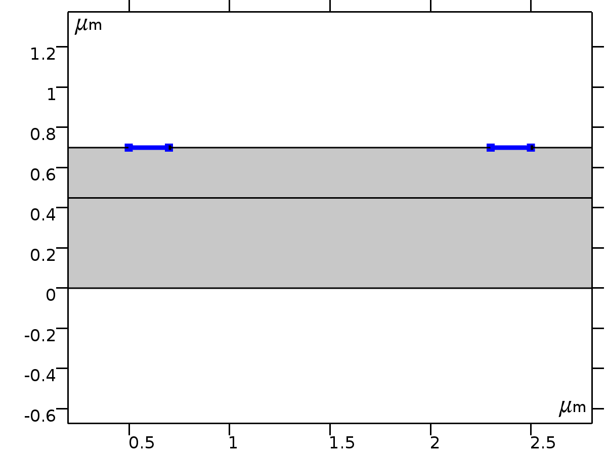
| Geometric entity level | Boundary |
| Selection | Boundaries 1, 3, 6, 8, 10–11 |
| Description | Value |
|---|---|
| Surface traps | Off |
| Name | Expression | Unit | Description | Selection |
|---|---|---|---|---|
| semi.nD | -semi.rho_s | C/m² | Normal component of the electric displacement field | Boundaries 1, 3, 6, 8, 10–11 |
| semi.nV | V-semi.dc_n*semi.nE | V | Electric potential at boundary | Boundaries 1, 3, 6, 8, 10–11 |
| semi.nE | semi.nD/(epsilon0_const*semi.epsilonrs) | V/m | Normal electric field | Boundaries 1, 3, 6, 8, 10–11 |
| semi.nJn | 0 | A/m² | Outward normal electron current density | Boundaries 1, 3, 6, 8, 10–11 |
| semi.nJp | 0 | A/m² | Outward normal hole current density | Boundaries 1, 3, 6, 8, 10–11 |
| semi.n_bnd | if(abs(semi.bc_An_expo)<semi.global_flux_tol_sg,semi.nJn*semi.dc_n/(e_const*semi.bc_Dn)+semi.N,semi.nJn*(1-semi.bc_An)/(e_const*semi.bc_Vn)+semi.N*semi.bc_An) | 1/m³ | Boundary electron concentration | Boundaries 1, 3, 6, 8, 10–11 |
| semi.p_bnd | if(abs(semi.bc_Ap_expo)<semi.global_flux_tol_sg,-semi.nJp*semi.dc_n/(e_const*semi.bc_Dp)+semi.P,semi.nJp*(1-semi.bc_Ap)/(e_const*semi.bc_Vp)+semi.P*semi.bc_Ap) | 1/m³ | Boundary hole concentration | Boundaries 1, 3, 6, 8, 10–11 |
| semi.nJ | semi.nJn+semi.nJp | A/m² | Total normal current density | Boundaries 1, 3, 6, 8, 10–11 |
| semi.bc_Qn | 2*semi.Vth*semi.mun | m²/s | Electron non-equilibrium contribution to the thermal diffusion coefficient | Boundaries 1, 3, 6, 8, 10–11 |
| semi.bc_Qp | 2*semi.Vth*semi.mup | m²/s | Hole non-equilibrium contribution to the thermal diffusion coefficient | Boundaries 1, 3, 6, 8, 10–11 |
| semi.bc_Dn | semi.mun*semi.Vth*semi.Gn | m²/s | SG diffusive term for electrons at the boundaries | Boundaries 1, 3, 6, 8, 10–11 |
| semi.bc_Dp | semi.mup*semi.Vth*semi.Gp | m²/s | SG diffusive term for holes at the boundaries | Boundaries 1, 3, 6, 8, 10–11 |
| semi.bc_Dn_th | semi.bc_Qn-1.5*semi.bc_Dn | m²/s | Electron thermal diffusion coefficient | Boundaries 1, 3, 6, 8, 10–11 |
| semi.bc_Dp_th | semi.bc_Qp-1.5*semi.bc_Dp | m²/s | Hole thermal diffusion coefficient | Boundaries 1, 3, 6, 8, 10–11 |
| semi.bc_Vn | semi.mun*semi.nE-semi.mun*(d(semi.chi_semi,X)*semi.ngX+d(semi.chi_semi,Y)*semi.ngY)+semi.bc_Dn_th*(d(semi.Tl,X)*semi.ngX+d(semi.Tl,Y)*semi.ngY)/semi.Tl | m/s | SG convective term for electrons at the boundaries | Boundaries 1, 3, 6, 8, 10–11 |
| semi.bc_Vp | semi.mup*semi.nE-semi.mup*(d(semi.chi_semi,X)*semi.ngX+d(semi.chi_semi,Y)*semi.ngY)-semi.mup*(d(semi.Eg,X)*semi.ngX+d(semi.Eg,Y)*semi.ngY)-semi.bc_Dp_th*(d(semi.Tl,X)*semi.ngX+d(semi.Tl,Y)*semi.ngY)/semi.Tl | m/s | SG convective term for holes at the boundaries | Boundaries 1, 3, 6, 8, 10–11 |
| semi.bc_An | exp(semi.bc_An_expo) | 1 | SG exponential term for electrons at the boundaries | Boundaries 1, 3, 6, 8, 10–11 |
| semi.bc_Ap | exp(semi.bc_Ap_expo) | 1 | SG exponential term for holes at the boundaries | Boundaries 1, 3, 6, 8, 10–11 |
| semi.bc_An_expo | -semi.bc_Vn*semi.dc_n/semi.bc_Dn | 1 | SG exponent for electrons at the boundaries | Boundaries 1, 3, 6, 8, 10–11 |
| semi.bc_Ap_expo | semi.bc_Vp*semi.dc_n/semi.bc_Dp | 1 | SG exponent for holes at the boundaries | Boundaries 1, 3, 6, 8, 10–11 |
| semi.ins1.cp | 1 | 1 | Continuation parameter | Boundaries 1, 3, 6, 8, 10–11 |
| Weak expression | Integration order | Integration frame | Selection |
|---|---|---|---|
| semi.nD*test(V)*semi.d | 0 | Material | Boundaries 1, 3, 6, 8, 10–11 |
| -semi.nJn*test(Ne) | 0 | Material | Boundaries 1, 3, 6, 8, 10–11 |
| -semi.nJp*test(Ph) | 0 | Material | Boundaries 1, 3, 6, 8, 10–11 |
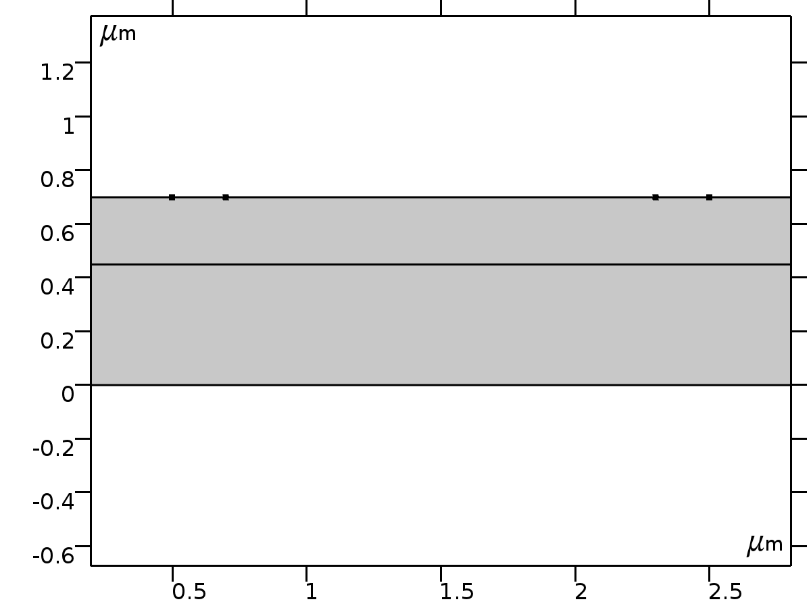
| Geometric entity level | Boundary |
| Selection | No boundaries |


| Geometric entity level | Boundary |
| Selection | No boundaries |
| Description | Value |
|---|---|
| Surface traps | Off |
| Tunneling type | None |
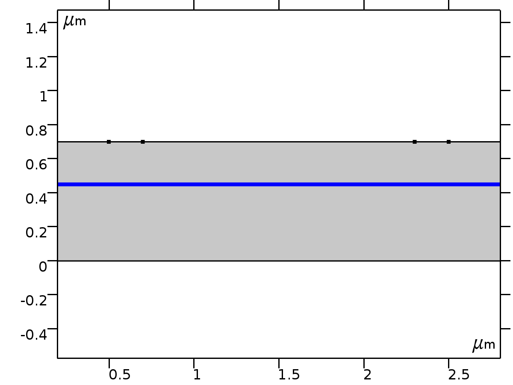
| Geometric entity level | Boundary |
| Selection | Boundary 4 |
| Description | Value |
|---|---|
| Continuity model | Continuous quasi - Fermi levels |
| Use weak constraints | Off |
| Constraint method | Elemental |
| Continuation type | No continuation |
| Name | Expression | Unit | Description | Selection |
|---|---|---|---|---|
| semi.nJn_int | if(abs(semi.Ec_bnd_up-semi.Ec_bnd_down)<eps*abs(semi.Eg),semi.nJn_sg,semi.nJn_hetero) | A/m² | Junction electron current | Boundary 4 |
| semi.nJp_int | if(abs(semi.Ev_bnd_up-semi.Ev_bnd_down)<eps*abs(semi.Eg),semi.nJp_sg,semi.nJp_hetero) | A/m² | Junction hole current | Boundary 4 |
| semi.Ec_bnd_up | -semi.nV-up(semi.chi_semi) | V | Conduction band energy level at boundary, upside | Boundary 4 |
| semi.Ec_bnd_down | -semi.nV-down(semi.chi_semi) | V | Conduction band energy level at boundary, downside | Boundary 4 |
| semi.Ev_bnd_up | semi.Ec_bnd_up-up(semi.Eg) | V | Valence band energy level at boundary, upside | Boundary 4 |
| semi.Ev_bnd_down | semi.Ec_bnd_down-down(semi.Eg) | V | Valence band energy level at boundary, downside | Boundary 4 |
| semi.nQFSGn | e_const*semi.Vn_down*(-semi.An*semi.delta_n*down(semi.N)+semi.Bn*up(semi.N))/(-(-1+semi.An)*semi.delta_n+(-1+semi.Bn)*semi.Vn_down/semi.Vn_up) | A/m² | Heterojunction electron current | Boundary 4 |
| semi.nQFCn | e_const*(-semi.Dn_down*semi.Dn_up*(semi.delta_n*down(semi.N)-up(semi.N))/(semi.dc_up*semi.Dn_down+semi.dc_down*semi.delta_n*semi.Dn_up)+0.5*(semi.dc_down*semi.delta_n*semi.Dn_up*(2*semi.dc_up*semi.Dn_down*down(semi.N)+semi.dc_down*semi.delta_n*semi.Dn_up*down(semi.N)+semi.dc_down*semi.Dn_up*up(semi.N))*semi.Vn_down+semi.dc_up*semi.Dn_down*(semi.dc_up*semi.delta_n*semi.Dn_down*down(semi.N)+semi.dc_up*semi.Dn_down*up(semi.N)+2*semi.dc_down*semi.delta_n*semi.Dn_up*up(semi.N))*semi.Vn_up)/(semi.dc_up*semi.Dn_down+semi.dc_down*semi.delta_n*semi.Dn_up)^2) | A/m² | Heterojunction electron current | Boundary 4 |
| semi.nQFSGp | e_const*semi.Vp_down*(semi.Ap*semi.delta_p*down(semi.P)-semi.Bp*up(semi.P))/((-1+semi.Ap)*semi.delta_p+(1-semi.Bp)*semi.Vp_down/semi.Vp_up) | A/m² | Heterojunction hole current | Boundary 4 |
| semi.nQFCp | e_const*(semi.Dp_down*semi.Dp_up*(semi.delta_p*down(semi.P)-up(semi.P))/(semi.dc_up*semi.Dp_down+semi.dc_down*semi.delta_p*semi.Dp_up)+0.5*(semi.dc_down*semi.delta_p*semi.Dp_up*(2*semi.dc_up*semi.Dp_down*down(semi.P)+semi.dc_down*semi.delta_p*semi.Dp_up*down(semi.P)+semi.dc_down*semi.Dp_up*up(semi.P))*semi.Vp_down+semi.dc_up*semi.Dp_down*(semi.dc_up*semi.delta_p*semi.Dp_down*down(semi.P)+semi.dc_up*semi.Dp_down*up(semi.P)+2*semi.dc_down*semi.delta_p*semi.Dp_up*up(semi.P))*semi.Vp_up)/(semi.dc_up*semi.Dp_down+semi.dc_down*semi.delta_p*semi.Dp_up)^2) | A/m² | Heterojunction hole current | Boundary 4 |
| semi.nJn_hetero | if(abs(semi.Bn_expo)+abs(semi.An_expo)<semi.global_flux_tol_sg,semi.nQFCn,semi.nQFSGn) | A/m² | Heterojunction electron current | Boundary 4 |
| semi.nJp_hetero | if(abs(semi.Bp_expo)+abs(semi.Ap_expo)<semi.global_flux_tol_sg,semi.nQFCp,semi.nQFSGp) | A/m² | Heterojunction hole current | Boundary 4 |
| semi.delta_n | up(semi.Nc)*semi.gamma_n_bnd_up*exp((semi.Ec_bnd_down-semi.Ec_bnd_up)/semi.Vth)/(down(semi.Nc)*semi.gamma_n_bnd_down) | 1 | Electron concentration ratio | Boundary 4 |
| semi.delta_p | up(semi.Nv)*semi.gamma_p_bnd_up*exp((semi.Ev_bnd_up-semi.Ev_bnd_down)/semi.Vth)/(down(semi.Nv)*semi.gamma_p_bnd_down) | 1 | Hole concentration ratio | Boundary 4 |
| semi.nQFdSG | (-semi.Bn*up(semi.N)+semi.An*((1-semi.Bn)*semi.Vn_down*down(semi.N)/semi.Vn_up+semi.Bn*up(semi.N)))/((-1+semi.An)*semi.delta_n+(1-semi.Bn)*semi.Vn_down/semi.Vn_up) | 1/m³ | Electron concentration at boundary, downside | Boundary 4 |
| semi.pQFdSG | (-semi.Bp*up(semi.P)+semi.Ap*((1-semi.Bp)*semi.Vp_down*down(semi.P)/semi.Vp_up+semi.Bp*up(semi.P)))/((-1+semi.Ap)*semi.delta_p+(1-semi.Bp)*semi.Vp_down/semi.Vp_up) | 1/m³ | Hole concentration at boundary, downside | Boundary 4 |
| semi.nQFdC | (semi.dc_up*semi.Dn_down*down(semi.N)+semi.dc_down*semi.Dn_up*up(semi.N))/(semi.dc_up*semi.Dn_down+semi.dc_down*semi.delta_n*semi.Dn_up) | 1/m³ | Electron concentration at boundary, downside | Boundary 4 |
| semi.pQFdC | (semi.dc_up*semi.Dp_down*down(semi.P)+semi.dc_down*semi.Dp_up*up(semi.P))/(semi.dc_up*semi.Dp_down+semi.dc_down*semi.delta_p*semi.Dp_up) | 1/m³ | Hole concentration at boundary, downside | Boundary 4 |
| semi.n_bnd_down | if(abs(semi.Bn_expo)+abs(semi.An_expo)<semi.global_flux_tol_sg,semi.nQFdC,semi.nQFdSG) | 1/m³ | Electron concentration at boundary, downside | Boundary 4 |
| semi.p_bnd_down | if(abs(semi.Bp_expo)+abs(semi.Ap_expo)<semi.global_flux_tol_sg,semi.pQFdC,semi.pQFdSG) | 1/m³ | Hole concentration at boundary, downside | Boundary 4 |
| semi.n_bnd_up | semi.delta_n*semi.n_bnd_down | 1/m³ | Electron concentration at boundary, upside | Boundary 4 |
| semi.p_bnd_up | semi.delta_p*semi.p_bnd_down | 1/m³ | Hole concentration at boundary, upside | Boundary 4 |
| semi.gamma_n_bnd_down | down(semi.gamma_n) | 1 | Electron degeneracy factor at boundary, downside | Boundary 4 |
| semi.gamma_n_bnd_up | up(semi.gamma_n) | 1 | Electron degeneracy factor at boundary, upside | Boundary 4 |
| semi.gamma_p_bnd_down | down(semi.gamma_p) | 1 | Hole degeneracy factor at boundary, downside | Boundary 4 |
| semi.gamma_p_bnd_up | up(semi.gamma_p) | 1 | Hole degeneracy factor at boundary, upside | Boundary 4 |
| semi.cont1.cp | 1 | 1 | Continuation parameter | Boundary 4 |
| Weak expression | Integration order | Integration frame | Selection |
|---|---|---|---|
| semi.nJn_int*test(up(Ne)-down(Ne)) | 0 | Material | Boundary 4 |
| semi.nJp_int*test(up(Ph)-down(Ph)) | 0 | Material | Boundary 4 |

| Geometric entity level | Domain |
| Selection | Domains 1–2 |

| Geometric entity level | Domain |
| Selection | Domains 1–2 |
| Description | Value |
|---|---|
| Continuation type | Use doping and trap density continuation parameter |
| Dopant distribution | User defined |
| Impurity type | Acceptor doping (p - type) |
| Acceptor concentration | 1e17[1/cm^3] |
| Name | Expression | Unit | Description | Selection |
|---|---|---|---|---|
| semi.Nd | semi.adm1.Nd | 1/m³ | Donor concentration | Domains 1–2 |
| semi.Na | semi.adm1.Na | 1/m³ | Acceptor concentration | Domains 1–2 |
| semi.adm1.cp_dtd | semi.cp_dtd | 1 | Doping and trap density continuation parameter | Domains 1–2 |
| semi.adm1.Nd0 | semi.adm1.NAc | 1/m³ | Distribution number density | Domains 1–2 |
| semi.adm1.NAc | 1.0E17[1/cm^3] | 1/m³ | Acceptor concentration | Domains 1–2 |
| semi.adm1.Nb | 1.0E15[1/cm^3] | 1/m³ | Background doping concentration | Domains 1–2 |
| semi.adm1.Nd | 0 | 1/m³ | Donor concentration | Domains 1–2 |
| semi.adm1.Na | semi.adm1.cp_dtd*semi.adm1.Nd0 | 1/m³ | Acceptor concentration | Domains 1–2 |

| Geometric entity level | Domain |
| Selection | Domains 1–2 |


| Description | Value |
|---|---|
| Continuation type | Use doping and trap density continuation parameter |
| Dopant distribution | Box |
| Impurity type | Donor doping (n - type) |
| Donor concentration | 1e20[1/cm^3] |
| Base position, X component | 0[um] |
| Base position, Y component | 0.6[um] |
| Base position, Z component | 0 |
| Junction depth, asymmetric, X component | 0.2[um] |
| Junction depth, asymmetric, Y component | 0.25[um] |
| Junction depth, asymmetric, Z component | 0 |
| Specify different length scales for each direction | On |
| Width | 0.6[um] |
| Depth | 0.1[um] |
| Base | Corner |
| Profile away from uniform region | Gaussian |
| Specify profile length scale | Junction depth |
| Background doping concentration | Acceptor concentration (semi/adm1) |
| Name | Expression | Unit | Description | Selection |
|---|---|---|---|---|
| semi.Nd | semi.adm2.Nd | 1/m³ | Donor concentration | Domains 1–2 |
| semi.Na | semi.adm2.Na | 1/m³ | Acceptor concentration | Domains 1–2 |
| semi.adm2.cp_dtd | semi.cp_dtd | 1 | Doping and trap density continuation parameter | Domains 1–2 |
| semi.adm2.Nd0 | semi.adm2.cp_dtd*semi.adm2.Nbox*exp(-(semi.adm2.posr1/semi.adm2.chX)^2)*exp(-(semi.adm2.negr1/semi.adm2.chX)^2)*exp(-(semi.adm2.posr2/semi.adm2.chY)^2)*exp(-(semi.adm2.negr2/semi.adm2.chY)^2) | 1/m³ | Distribution number density | Domains 1–2 |
| semi.adm2.NDc | 1.0E20[1/cm^3] | 1/m³ | Donor concentration | Domains 1–2 |
| semi.adm2.Nbox | semi.adm2.NDc | 1/m³ | Distribution number density | Domains 1–2 |
| semi.adm2.matcoordX | X-semi.adm2.rb1 | m | Domains 1–2 | |
| semi.adm2.matcoordY | Y-semi.adm2.rb2 | m | Domains 1–2 | |
| semi.adm2.matcoordZ | Z-semi.adm2.rb3 | m | Domains 1–2 | |
| semi.adm2.rotcoordX | semi.adm2.matcoordX | m | Domains 1–2 | |
| semi.adm2.rotcoordY | semi.adm2.matcoordY | m | Domains 1–2 | |
| semi.adm2.rotcoordZ | semi.adm2.matcoordZ | m | Domains 1–2 | |
| semi.adm2.posr1 | max(0,semi.adm2.rotcoordX-semi.adm2.poso1) | m | Positive direction ramp, 1 component | Domains 1–2 |
| semi.adm2.posr2 | max(0,semi.adm2.rotcoordY-semi.adm2.poso2) | m | Positive direction ramp, 2 component | Domains 1–2 |
| semi.adm2.posr3 | 0 | m | Positive direction ramp, 3 component | Domains 1–2 |
| semi.adm2.negr1 | max(0,-semi.adm2.rotcoordX-semi.adm2.nego1) | m | Negative direction ramp, 1 component | Domains 1–2 |
| semi.adm2.negr2 | max(0,-semi.adm2.rotcoordY-semi.adm2.nego2) | m | Negative direction ramp, 2 component | Domains 1–2 |
| semi.adm2.negr3 | 0 | m | Negative direction ramp, 3 component | Domains 1–2 |
| semi.adm2.poso1 | semi.adm2.jwidth | m | Positive direction offset, 1 component | Domains 1–2 |
| semi.adm2.poso2 | semi.adm2.jdepth | m | Positive direction offset, 2 component | Domains 1–2 |
| semi.adm2.poso3 | 0 | m | Positive direction offset, 3 component | Domains 1–2 |
| semi.adm2.nego1 | 0 | m | Negative direction offset, 1 component | Domains 1–2 |
| semi.adm2.nego2 | 0 | m | Negative direction offset, 2 component | Domains 1–2 |
| semi.adm2.nego3 | 0 | m | Negative direction offset, 3 component | Domains 1–2 |
| semi.adm2.jwidth | 0.6[um] | m | Width | Domains 1–2 |
| semi.adm2.jdepth | 0.1[um] | m | Depth | Domains 1–2 |
| semi.adm2.jdX | semi.adm2.jda1 | m | Junction depth, X component | Domains 1–2 |
| semi.adm2.jdY | semi.adm2.jda2 | m | Junction depth, Y component | Domains 1–2 |
| semi.adm2.jdZ | semi.adm2.jda3 | m | Junction depth, Z component | Domains 1–2 |
| semi.adm2.chX | semi.adm2.jdX/sqrt(log(abs(semi.adm2.Nbox/semi.adm2.Nb))) | m | Characteristic length for distribution fall-off, X component | Domains 1–2 |
| semi.adm2.chY | semi.adm2.jdY/sqrt(log(abs(semi.adm2.Nbox/semi.adm2.Nb))) | m | Characteristic length for distribution fall-off, Y component | Domains 1–2 |
| semi.adm2.chZ | 0 | m | Characteristic length for distribution fall-off, Z component | Domains 1–2 |
| semi.adm2.rb1 | 0[um] | m | Base position, 1 component | Domains 1–2 |
| semi.adm2.rb2 | 0.6[um] | m | Base position, 2 component | Domains 1–2 |
| semi.adm2.rb3 | 0 | m | Base position, 3 component | Domains 1–2 |
| semi.adm2.jda1 | 0.2[um] | m | Junction depth, asymmetric, 1 component | Domains 1–2 |
| semi.adm2.jda2 | 0.25[um] | m | Junction depth, asymmetric, 2 component | Domains 1–2 |
| semi.adm2.jda3 | 0 | m | Junction depth, asymmetric, 3 component | Domains 1–2 |
| semi.adm2.Nb | model.input.Nb | 1/m³ | Background doping concentration | Domains 1–2 |
| semi.adm2.Nd | semi.adm2.cp_dtd*semi.adm2.Nd0 | 1/m³ | Donor concentration | Domains 1–2 |
| semi.adm2.Na | 0 | 1/m³ | Acceptor concentration | Domains 1–2 |

| Geometric entity level | Domain |
| Selection | Domains 1–2 |

| Description | Value |
|---|---|
| Continuation type | Use doping and trap density continuation parameter |
| Dopant distribution | Box |
| Impurity type | Donor doping (n - type) |
| Donor concentration | 1e20[1/cm^3] |
| Base position, X component | 2.4[um] |
| Base position, Y component | 0.6[um] |
| Base position, Z component | 0 |
| Junction depth, asymmetric, X component | 0.2[um] |
| Junction depth, asymmetric, Y component | 0.25[um] |
| Junction depth, asymmetric, Z component | 0 |
| Specify different length scales for each direction | On |
| Width | 0.6[um] |
| Depth | 0.1[um] |
| Base | Corner |
| Profile away from uniform region | Gaussian |
| Specify profile length scale | Junction depth |
| Background doping concentration | Acceptor concentration (semi/adm1) |
| Name | Expression | Unit | Description | Selection |
|---|---|---|---|---|
| semi.Nd | semi.adm3.Nd | 1/m³ | Donor concentration | Domains 1–2 |
| semi.Na | semi.adm3.Na | 1/m³ | Acceptor concentration | Domains 1–2 |
| semi.adm3.cp_dtd | semi.cp_dtd | 1 | Doping and trap density continuation parameter | Domains 1–2 |
| semi.adm3.Nd0 | semi.adm3.cp_dtd*semi.adm3.Nbox*exp(-(semi.adm3.posr1/semi.adm3.chX)^2)*exp(-(semi.adm3.negr1/semi.adm3.chX)^2)*exp(-(semi.adm3.posr2/semi.adm3.chY)^2)*exp(-(semi.adm3.negr2/semi.adm3.chY)^2) | 1/m³ | Distribution number density | Domains 1–2 |
| semi.adm3.NDc | 1.0E20[1/cm^3] | 1/m³ | Donor concentration | Domains 1–2 |
| semi.adm3.Nbox | semi.adm3.NDc | 1/m³ | Distribution number density | Domains 1–2 |
| semi.adm3.matcoordX | X-semi.adm3.rb1 | m | Domains 1–2 | |
| semi.adm3.matcoordY | Y-semi.adm3.rb2 | m | Domains 1–2 | |
| semi.adm3.matcoordZ | Z-semi.adm3.rb3 | m | Domains 1–2 | |
| semi.adm3.rotcoordX | semi.adm3.matcoordX | m | Domains 1–2 | |
| semi.adm3.rotcoordY | semi.adm3.matcoordY | m | Domains 1–2 | |
| semi.adm3.rotcoordZ | semi.adm3.matcoordZ | m | Domains 1–2 | |
| semi.adm3.posr1 | max(0,semi.adm3.rotcoordX-semi.adm3.poso1) | m | Positive direction ramp, 1 component | Domains 1–2 |
| semi.adm3.posr2 | max(0,semi.adm3.rotcoordY-semi.adm3.poso2) | m | Positive direction ramp, 2 component | Domains 1–2 |
| semi.adm3.posr3 | 0 | m | Positive direction ramp, 3 component | Domains 1–2 |
| semi.adm3.negr1 | max(0,-semi.adm3.rotcoordX-semi.adm3.nego1) | m | Negative direction ramp, 1 component | Domains 1–2 |
| semi.adm3.negr2 | max(0,-semi.adm3.rotcoordY-semi.adm3.nego2) | m | Negative direction ramp, 2 component | Domains 1–2 |
| semi.adm3.negr3 | 0 | m | Negative direction ramp, 3 component | Domains 1–2 |
| semi.adm3.poso1 | semi.adm3.jwidth | m | Positive direction offset, 1 component | Domains 1–2 |
| semi.adm3.poso2 | semi.adm3.jdepth | m | Positive direction offset, 2 component | Domains 1–2 |
| semi.adm3.poso3 | 0 | m | Positive direction offset, 3 component | Domains 1–2 |
| semi.adm3.nego1 | 0 | m | Negative direction offset, 1 component | Domains 1–2 |
| semi.adm3.nego2 | 0 | m | Negative direction offset, 2 component | Domains 1–2 |
| semi.adm3.nego3 | 0 | m | Negative direction offset, 3 component | Domains 1–2 |
| semi.adm3.jwidth | 0.6[um] | m | Width | Domains 1–2 |
| semi.adm3.jdepth | 0.1[um] | m | Depth | Domains 1–2 |
| semi.adm3.jdX | semi.adm3.jda1 | m | Junction depth, X component | Domains 1–2 |
| semi.adm3.jdY | semi.adm3.jda2 | m | Junction depth, Y component | Domains 1–2 |
| semi.adm3.jdZ | semi.adm3.jda3 | m | Junction depth, Z component | Domains 1–2 |
| semi.adm3.chX | semi.adm3.jdX/sqrt(log(abs(semi.adm3.Nbox/semi.adm3.Nb))) | m | Characteristic length for distribution fall-off, X component | Domains 1–2 |
| semi.adm3.chY | semi.adm3.jdY/sqrt(log(abs(semi.adm3.Nbox/semi.adm3.Nb))) | m | Characteristic length for distribution fall-off, Y component | Domains 1–2 |
| semi.adm3.chZ | 0 | m | Characteristic length for distribution fall-off, Z component | Domains 1–2 |
| semi.adm3.rb1 | 2.4[um] | m | Base position, 1 component | Domains 1–2 |
| semi.adm3.rb2 | 0.6[um] | m | Base position, 2 component | Domains 1–2 |
| semi.adm3.rb3 | 0 | m | Base position, 3 component | Domains 1–2 |
| semi.adm3.jda1 | 0.2[um] | m | Junction depth, asymmetric, 1 component | Domains 1–2 |
| semi.adm3.jda2 | 0.25[um] | m | Junction depth, asymmetric, 2 component | Domains 1–2 |
| semi.adm3.jda3 | 0 | m | Junction depth, asymmetric, 3 component | Domains 1–2 |
| semi.adm3.Nb | model.input.Nb | 1/m³ | Background doping concentration | Domains 1–2 |
| semi.adm3.Nd | semi.adm3.cp_dtd*semi.adm3.Nd0 | 1/m³ | Donor concentration | Domains 1–2 |
| semi.adm3.Na | 0 | 1/m³ | Acceptor concentration | Domains 1–2 |
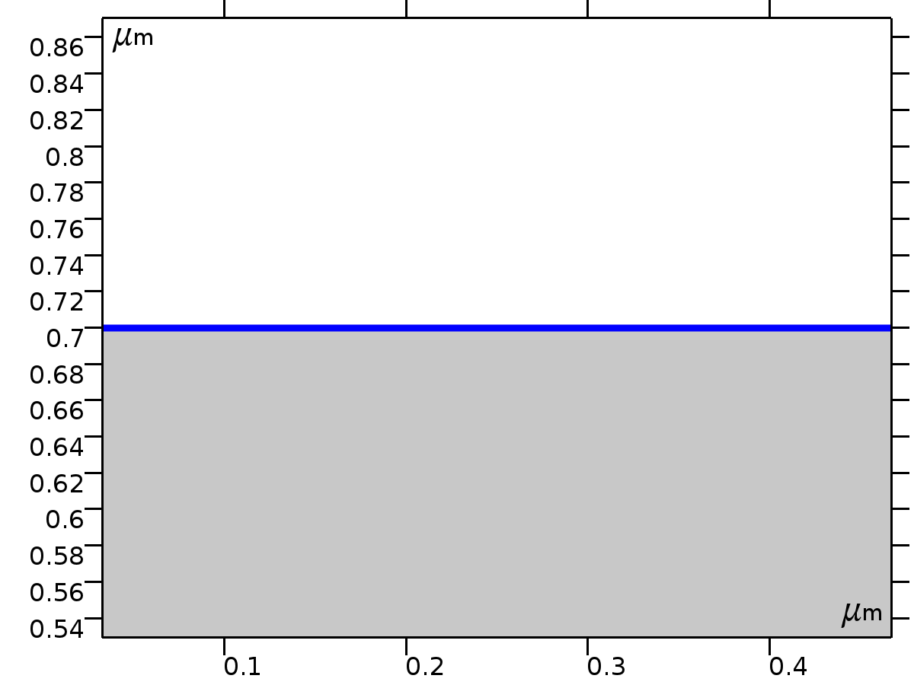
| Geometric entity level | Boundary |
| Selection | Boundary 5 |


| Description | Value |
|---|---|
| Type | Ideal ohmic |
| Use weak constraints | Off |
| Constraint method | Elemental |
| Terminal name | 1 |
| Terminal type | Voltage |
| Voltage | 0[V] |
| Name | Expression | Unit | Description | Selection |
|---|---|---|---|---|
| semi.nD | epsilon0_const*semi.epsilonrs*semi.nE | C/m² | Normal component of the electric displacement field | Boundary 5 |
| semi.nV | semi.Vterm+semi.V_eq | V | Electric potential at boundary | Boundary 5 |
| semi.nE | -(semi.nV-V)/semi.dc_n | V/m | Normal electric field | Boundary 5 |
| semi.nJn | if(abs(semi.bc_An_expo)<semi.global_flux_tol_sg,semi.nJn_C,semi.nJn_SG) | A/m² | Outward normal electron current density | Boundary 5 |
| semi.nJp | if(abs(semi.bc_Ap_expo)<semi.global_flux_tol_sg,semi.nJp_C,semi.nJp_SG) | A/m² | Outward normal hole current density | Boundary 5 |
| semi.n_bnd | semi.n_eq | 1/m³ | Boundary electron concentration | Boundary 5 |
| semi.p_bnd | semi.p_eq | 1/m³ | Boundary hole concentration | Boundary 5 |
| semi.nJ | semi.nJn+semi.nJp | A/m² | Total normal current density | Boundary 5 |
| semi.bc_Qn | 2*semi.Vth*semi.mun | m²/s | Electron non-equilibrium contribution to the thermal diffusion coefficient | Boundary 5 |
| semi.bc_Qp | 2*semi.Vth*semi.mup | m²/s | Hole non-equilibrium contribution to the thermal diffusion coefficient | Boundary 5 |
| semi.bc_Dn | semi.mun*semi.Vth*semi.Gn | m²/s | SG diffusive term for electrons at the boundaries | Boundary 5 |
| semi.bc_Dp | semi.mup*semi.Vth*semi.Gp | m²/s | SG diffusive term for holes at the boundaries | Boundary 5 |
| semi.bc_Dn_th | semi.bc_Qn-1.5*semi.bc_Dn | m²/s | Electron thermal diffusion coefficient | Boundary 5 |
| semi.bc_Dp_th | semi.bc_Qp-1.5*semi.bc_Dp | m²/s | Hole thermal diffusion coefficient | Boundary 5 |
| semi.bc_Vn | semi.mun*semi.nE-semi.mun*(d(semi.chi_semi,X)*semi.ngX+d(semi.chi_semi,Y)*semi.ngY)+semi.bc_Dn_th*(d(semi.Tl,X)*semi.ngX+d(semi.Tl,Y)*semi.ngY)/semi.Tl | m/s | SG convective term for electrons at the boundaries | Boundary 5 |
| semi.bc_Vp | semi.mup*semi.nE-semi.mup*(d(semi.chi_semi,X)*semi.ngX+d(semi.chi_semi,Y)*semi.ngY)-semi.mup*(d(semi.Eg,X)*semi.ngX+d(semi.Eg,Y)*semi.ngY)-semi.bc_Dp_th*(d(semi.Tl,X)*semi.ngX+d(semi.Tl,Y)*semi.ngY)/semi.Tl | m/s | SG convective term for holes at the boundaries | Boundary 5 |
| semi.bc_An | exp(semi.bc_An_expo) | 1 | SG exponential term for electrons at the boundaries | Boundary 5 |
| semi.bc_Ap | exp(semi.bc_Ap_expo) | 1 | SG exponential term for holes at the boundaries | Boundary 5 |
| semi.bc_An_expo | -semi.bc_Vn*semi.dc_n/semi.bc_Dn | 1 | SG exponent for electrons at the boundaries | Boundary 5 |
| semi.bc_Ap_expo | semi.bc_Vp*semi.dc_n/semi.bc_Dp | 1 | SG exponent for holes at the boundaries | Boundary 5 |
| semi.nJn_SG | -semi.bc_Vn*e_const*(semi.n_bnd-semi.N*semi.bc_An)/semi.nJn_SG_denom_num | A/m² | SG normal current for electrons | Boundary 5 |
| semi.nJp_SG | -semi.bc_Vp*e_const*(semi.p_bnd-semi.P*semi.bc_Ap)/semi.nJp_SG_denom_num | A/m² | SG normal current for holes | Boundary 5 |
| semi.nJn_SG_denom | -1+semi.bc_An | 1 | Denominator for SG normal current for electrons | Boundary 5 |
| semi.nJp_SG_denom | -1+semi.bc_Ap | 1 | Denominator for SG normal current for holes | Boundary 5 |
| semi.nJn_SG_denom_num | if(abs(semi.nJn_SG_denom)<semi.global_flux_tol_sg,if(sign(semi.nJn_SG_denom)==0,semi.global_flux_tol_sg,sign(semi.nJn_SG_denom)*semi.global_flux_tol_sg),semi.nJn_SG_denom) | 1 | Numerical denominator for SG normal current for electrons | Boundary 5 |
| semi.nJp_SG_denom_num | if(abs(semi.nJp_SG_denom)<semi.global_flux_tol_sg,if(sign(semi.nJp_SG_denom)==0,semi.global_flux_tol_sg,sign(semi.nJp_SG_denom)*semi.global_flux_tol_sg),semi.nJp_SG_denom) | 1 | Numerical denominator for SG normal current for holes | Boundary 5 |
| semi.nJn_C | e_const*(semi.bc_Dn*(semi.n_bnd-semi.N)/semi.dc_n+0.5*(semi.n_bnd+semi.N)*semi.bc_Vn) | A/m² | Centered difference normal current for electrons | Boundary 5 |
| semi.nJp_C | e_const*(semi.bc_Dp*(-semi.p_bnd+semi.P)/semi.dc_n+0.5*(semi.p_bnd+semi.P)*semi.bc_Vp) | A/m² | Centered difference normal current for holes | Boundary 5 |
| semi.Vterm | semi.mc1.V0 | V | Voltage | Boundary 5 |
| semi.I0_1 | -semi.mc1.int(semi.d*(semi.nJ+d(semi.nD,t))) | A | Terminal current | Global |
| semi.V0_1 | semi.mc1.int(semi.Vterm)/semi.mc1.int(1) | V | Terminal voltage | Global |
| semi.mc1.V0 | 0[V] | V | Voltage | Boundary 5 |
| Weak expression | Integration order | Integration frame | Selection |
|---|---|---|---|
| -semi.nJn*test(Ne) | 0 | Material | Boundary 5 |
| -semi.nJp*test(Ph) | 0 | Material | Boundary 5 |
| semi.nD*test(V)*semi.d | 0 | Material | Boundary 5 |
| Geometric entity level | Boundary |
| Selection | Boundary 9 |

| Description | Value |
|---|---|
| Type | Ideal ohmic |
| Use weak constraints | Off |
| Constraint method | Elemental |
| Terminal name | 2 |
| Terminal type | Voltage |
| Voltage | Vd |
| Name | Expression | Unit | Description | Selection |
|---|---|---|---|---|
| semi.nD | epsilon0_const*semi.epsilonrs*semi.nE | C/m² | Normal component of the electric displacement field | Boundary 9 |
| semi.nV | semi.Vterm+semi.V_eq | V | Electric potential at boundary | Boundary 9 |
| semi.nE | -(semi.nV-V)/semi.dc_n | V/m | Normal electric field | Boundary 9 |
| semi.nJn | if(abs(semi.bc_An_expo)<semi.global_flux_tol_sg,semi.nJn_C,semi.nJn_SG) | A/m² | Outward normal electron current density | Boundary 9 |
| semi.nJp | if(abs(semi.bc_Ap_expo)<semi.global_flux_tol_sg,semi.nJp_C,semi.nJp_SG) | A/m² | Outward normal hole current density | Boundary 9 |
| semi.n_bnd | semi.n_eq | 1/m³ | Boundary electron concentration | Boundary 9 |
| semi.p_bnd | semi.p_eq | 1/m³ | Boundary hole concentration | Boundary 9 |
| semi.nJ | semi.nJn+semi.nJp | A/m² | Total normal current density | Boundary 9 |
| semi.bc_Qn | 2*semi.Vth*semi.mun | m²/s | Electron non-equilibrium contribution to the thermal diffusion coefficient | Boundary 9 |
| semi.bc_Qp | 2*semi.Vth*semi.mup | m²/s | Hole non-equilibrium contribution to the thermal diffusion coefficient | Boundary 9 |
| semi.bc_Dn | semi.mun*semi.Vth*semi.Gn | m²/s | SG diffusive term for electrons at the boundaries | Boundary 9 |
| semi.bc_Dp | semi.mup*semi.Vth*semi.Gp | m²/s | SG diffusive term for holes at the boundaries | Boundary 9 |
| semi.bc_Dn_th | semi.bc_Qn-1.5*semi.bc_Dn | m²/s | Electron thermal diffusion coefficient | Boundary 9 |
| semi.bc_Dp_th | semi.bc_Qp-1.5*semi.bc_Dp | m²/s | Hole thermal diffusion coefficient | Boundary 9 |
| semi.bc_Vn | semi.mun*semi.nE-semi.mun*(d(semi.chi_semi,X)*semi.ngX+d(semi.chi_semi,Y)*semi.ngY)+semi.bc_Dn_th*(d(semi.Tl,X)*semi.ngX+d(semi.Tl,Y)*semi.ngY)/semi.Tl | m/s | SG convective term for electrons at the boundaries | Boundary 9 |
| semi.bc_Vp | semi.mup*semi.nE-semi.mup*(d(semi.chi_semi,X)*semi.ngX+d(semi.chi_semi,Y)*semi.ngY)-semi.mup*(d(semi.Eg,X)*semi.ngX+d(semi.Eg,Y)*semi.ngY)-semi.bc_Dp_th*(d(semi.Tl,X)*semi.ngX+d(semi.Tl,Y)*semi.ngY)/semi.Tl | m/s | SG convective term for holes at the boundaries | Boundary 9 |
| semi.bc_An | exp(semi.bc_An_expo) | 1 | SG exponential term for electrons at the boundaries | Boundary 9 |
| semi.bc_Ap | exp(semi.bc_Ap_expo) | 1 | SG exponential term for holes at the boundaries | Boundary 9 |
| semi.bc_An_expo | -semi.bc_Vn*semi.dc_n/semi.bc_Dn | 1 | SG exponent for electrons at the boundaries | Boundary 9 |
| semi.bc_Ap_expo | semi.bc_Vp*semi.dc_n/semi.bc_Dp | 1 | SG exponent for holes at the boundaries | Boundary 9 |
| semi.nJn_SG | -semi.bc_Vn*e_const*(semi.n_bnd-semi.N*semi.bc_An)/semi.nJn_SG_denom_num | A/m² | SG normal current for electrons | Boundary 9 |
| semi.nJp_SG | -semi.bc_Vp*e_const*(semi.p_bnd-semi.P*semi.bc_Ap)/semi.nJp_SG_denom_num | A/m² | SG normal current for holes | Boundary 9 |
| semi.nJn_SG_denom | -1+semi.bc_An | 1 | Denominator for SG normal current for electrons | Boundary 9 |
| semi.nJp_SG_denom | -1+semi.bc_Ap | 1 | Denominator for SG normal current for holes | Boundary 9 |
| semi.nJn_SG_denom_num | if(abs(semi.nJn_SG_denom)<semi.global_flux_tol_sg,if(sign(semi.nJn_SG_denom)==0,semi.global_flux_tol_sg,sign(semi.nJn_SG_denom)*semi.global_flux_tol_sg),semi.nJn_SG_denom) | 1 | Numerical denominator for SG normal current for electrons | Boundary 9 |
| semi.nJp_SG_denom_num | if(abs(semi.nJp_SG_denom)<semi.global_flux_tol_sg,if(sign(semi.nJp_SG_denom)==0,semi.global_flux_tol_sg,sign(semi.nJp_SG_denom)*semi.global_flux_tol_sg),semi.nJp_SG_denom) | 1 | Numerical denominator for SG normal current for holes | Boundary 9 |
| semi.nJn_C | e_const*(semi.bc_Dn*(semi.n_bnd-semi.N)/semi.dc_n+0.5*(semi.n_bnd+semi.N)*semi.bc_Vn) | A/m² | Centered difference normal current for electrons | Boundary 9 |
| semi.nJp_C | e_const*(semi.bc_Dp*(-semi.p_bnd+semi.P)/semi.dc_n+0.5*(semi.p_bnd+semi.P)*semi.bc_Vp) | A/m² | Centered difference normal current for holes | Boundary 9 |
| semi.Vterm | semi.mc2.V0 | V | Voltage | Boundary 9 |
| semi.I0_2 | -semi.mc2.int(semi.d*(semi.nJ+d(semi.nD,t))) | A | Terminal current | Global |
| semi.V0_2 | semi.mc2.int(semi.Vterm)/semi.mc2.int(1) | V | Terminal voltage | Global |
| semi.mc2.V0 | Vd | V | Voltage | Boundary 9 |
| Weak expression | Integration order | Integration frame | Selection |
|---|---|---|---|
| -semi.nJn*test(Ne) | 0 | Material | Boundary 9 |
| -semi.nJp*test(Ph) | 0 | Material | Boundary 9 |
| semi.nD*test(V)*semi.d | 0 | Material | Boundary 9 |
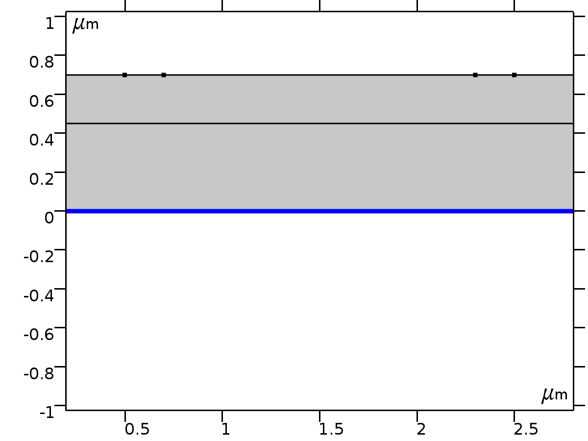
| Geometric entity level | Boundary |
| Selection | Boundary 2 |


| Description | Value |
|---|---|
| Type | Ideal ohmic |
| Use weak constraints | Off |
| Constraint method | Elemental |
| Terminal name | 3 |
| Terminal type | Voltage |
| Voltage | 0[V] |
| Name | Expression | Unit | Description | Selection |
|---|---|---|---|---|
| semi.nD | epsilon0_const*semi.epsilonrs*semi.nE | C/m² | Normal component of the electric displacement field | Boundary 2 |
| semi.nV | semi.Vterm+semi.V_eq | V | Electric potential at boundary | Boundary 2 |
| semi.nE | -(semi.nV-V)/semi.dc_n | V/m | Normal electric field | Boundary 2 |
| semi.nJn | if(abs(semi.bc_An_expo)<semi.global_flux_tol_sg,semi.nJn_C,semi.nJn_SG) | A/m² | Outward normal electron current density | Boundary 2 |
| semi.nJp | if(abs(semi.bc_Ap_expo)<semi.global_flux_tol_sg,semi.nJp_C,semi.nJp_SG) | A/m² | Outward normal hole current density | Boundary 2 |
| semi.n_bnd | semi.n_eq | 1/m³ | Boundary electron concentration | Boundary 2 |
| semi.p_bnd | semi.p_eq | 1/m³ | Boundary hole concentration | Boundary 2 |
| semi.nJ | semi.nJn+semi.nJp | A/m² | Total normal current density | Boundary 2 |
| semi.bc_Qn | 2*semi.Vth*semi.mun | m²/s | Electron non-equilibrium contribution to the thermal diffusion coefficient | Boundary 2 |
| semi.bc_Qp | 2*semi.Vth*semi.mup | m²/s | Hole non-equilibrium contribution to the thermal diffusion coefficient | Boundary 2 |
| semi.bc_Dn | semi.mun*semi.Vth*semi.Gn | m²/s | SG diffusive term for electrons at the boundaries | Boundary 2 |
| semi.bc_Dp | semi.mup*semi.Vth*semi.Gp | m²/s | SG diffusive term for holes at the boundaries | Boundary 2 |
| semi.bc_Dn_th | semi.bc_Qn-1.5*semi.bc_Dn | m²/s | Electron thermal diffusion coefficient | Boundary 2 |
| semi.bc_Dp_th | semi.bc_Qp-1.5*semi.bc_Dp | m²/s | Hole thermal diffusion coefficient | Boundary 2 |
| semi.bc_Vn | semi.mun*semi.nE-semi.mun*(d(semi.chi_semi,X)*semi.ngX+d(semi.chi_semi,Y)*semi.ngY)+semi.bc_Dn_th*(d(semi.Tl,X)*semi.ngX+d(semi.Tl,Y)*semi.ngY)/semi.Tl | m/s | SG convective term for electrons at the boundaries | Boundary 2 |
| semi.bc_Vp | semi.mup*semi.nE-semi.mup*(d(semi.chi_semi,X)*semi.ngX+d(semi.chi_semi,Y)*semi.ngY)-semi.mup*(d(semi.Eg,X)*semi.ngX+d(semi.Eg,Y)*semi.ngY)-semi.bc_Dp_th*(d(semi.Tl,X)*semi.ngX+d(semi.Tl,Y)*semi.ngY)/semi.Tl | m/s | SG convective term for holes at the boundaries | Boundary 2 |
| semi.bc_An | exp(semi.bc_An_expo) | 1 | SG exponential term for electrons at the boundaries | Boundary 2 |
| semi.bc_Ap | exp(semi.bc_Ap_expo) | 1 | SG exponential term for holes at the boundaries | Boundary 2 |
| semi.bc_An_expo | -semi.bc_Vn*semi.dc_n/semi.bc_Dn | 1 | SG exponent for electrons at the boundaries | Boundary 2 |
| semi.bc_Ap_expo | semi.bc_Vp*semi.dc_n/semi.bc_Dp | 1 | SG exponent for holes at the boundaries | Boundary 2 |
| semi.nJn_SG | -semi.bc_Vn*e_const*(semi.n_bnd-semi.N*semi.bc_An)/semi.nJn_SG_denom_num | A/m² | SG normal current for electrons | Boundary 2 |
| semi.nJp_SG | -semi.bc_Vp*e_const*(semi.p_bnd-semi.P*semi.bc_Ap)/semi.nJp_SG_denom_num | A/m² | SG normal current for holes | Boundary 2 |
| semi.nJn_SG_denom | -1+semi.bc_An | 1 | Denominator for SG normal current for electrons | Boundary 2 |
| semi.nJp_SG_denom | -1+semi.bc_Ap | 1 | Denominator for SG normal current for holes | Boundary 2 |
| semi.nJn_SG_denom_num | if(abs(semi.nJn_SG_denom)<semi.global_flux_tol_sg,if(sign(semi.nJn_SG_denom)==0,semi.global_flux_tol_sg,sign(semi.nJn_SG_denom)*semi.global_flux_tol_sg),semi.nJn_SG_denom) | 1 | Numerical denominator for SG normal current for electrons | Boundary 2 |
| semi.nJp_SG_denom_num | if(abs(semi.nJp_SG_denom)<semi.global_flux_tol_sg,if(sign(semi.nJp_SG_denom)==0,semi.global_flux_tol_sg,sign(semi.nJp_SG_denom)*semi.global_flux_tol_sg),semi.nJp_SG_denom) | 1 | Numerical denominator for SG normal current for holes | Boundary 2 |
| semi.nJn_C | e_const*(semi.bc_Dn*(semi.n_bnd-semi.N)/semi.dc_n+0.5*(semi.n_bnd+semi.N)*semi.bc_Vn) | A/m² | Centered difference normal current for electrons | Boundary 2 |
| semi.nJp_C | e_const*(semi.bc_Dp*(-semi.p_bnd+semi.P)/semi.dc_n+0.5*(semi.p_bnd+semi.P)*semi.bc_Vp) | A/m² | Centered difference normal current for holes | Boundary 2 |
| semi.Vterm | semi.mc3.V0 | V | Voltage | Boundary 2 |
| semi.I0_3 | -semi.mc3.int(semi.d*(semi.nJ+d(semi.nD,t))) | A | Terminal current | Global |
| semi.V0_3 | semi.mc3.int(semi.Vterm)/semi.mc3.int(1) | V | Terminal voltage | Global |
| semi.mc3.V0 | 0[V] | V | Voltage | Boundary 2 |
| Weak expression | Integration order | Integration frame | Selection |
|---|---|---|---|
| -semi.nJn*test(Ne) | 0 | Material | Boundary 2 |
| -semi.nJp*test(Ph) | 0 | Material | Boundary 2 |
| semi.nD*test(V)*semi.d | 0 | Material | Boundary 2 |
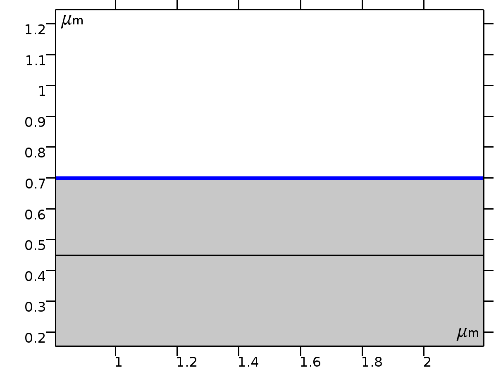
| Geometric entity level | Boundary |
| Selection | Boundary 7 |

| Description | Value |
|---|---|
| Terminal name | 4 |
| Terminal type | Voltage |
| Voltage | Vg |
| Continuation type | No continuation |
| Oxide relative permittivity | 3.9 |
| Oxide thickness | tox |
| Metal work function | 4.1[V] |
| Surface traps | Off |
| Name | Expression | Unit | Description | Selection |
|---|---|---|---|---|
| semi.nD | epsilon0_const*semi.epsilonrs*semi.nE | C/m² | Normal component of the electric displacement field | Boundary 7 |
| semi.nV | (semi.dc_n*semi.epsilon_ins*semi.nV_ins+semi.epsilonrs*semi.d_ins*V+semi.d_ins*semi.dc_n*semi.rho_s/epsilon0_const)/(semi.dc_n*semi.epsilon_ins+semi.d_ins*semi.epsilonrs) | V | Electric potential at boundary | Boundary 7 |
| semi.nE | -(semi.nV-V)/semi.dc_n | V/m | Normal electric field | Boundary 7 |
| semi.nJn | 0 | A/m² | Outward normal electron current density | Boundary 7 |
| semi.nJp | 0 | A/m² | Outward normal hole current density | Boundary 7 |
| semi.n_bnd | if(abs(semi.bc_An_expo)<semi.global_flux_tol_sg,semi.nJn*semi.dc_n/(e_const*semi.bc_Dn)+semi.N,semi.nJn*(1-semi.bc_An)/(e_const*semi.bc_Vn)+semi.N*semi.bc_An) | 1/m³ | Boundary electron concentration | Boundary 7 |
| semi.p_bnd | if(abs(semi.bc_Ap_expo)<semi.global_flux_tol_sg,-semi.nJp*semi.dc_n/(e_const*semi.bc_Dp)+semi.P,semi.nJp*(1-semi.bc_Ap)/(e_const*semi.bc_Vp)+semi.P*semi.bc_Ap) | 1/m³ | Boundary hole concentration | Boundary 7 |
| semi.nJ | semi.nJn+semi.nJp | A/m² | Total normal current density | Boundary 7 |
| semi.bc_Qn | 2*semi.Vth*semi.mun | m²/s | Electron non-equilibrium contribution to the thermal diffusion coefficient | Boundary 7 |
| semi.bc_Qp | 2*semi.Vth*semi.mup | m²/s | Hole non-equilibrium contribution to the thermal diffusion coefficient | Boundary 7 |
| semi.bc_Dn | semi.mun*semi.Vth*semi.Gn | m²/s | SG diffusive term for electrons at the boundaries | Boundary 7 |
| semi.bc_Dp | semi.mup*semi.Vth*semi.Gp | m²/s | SG diffusive term for holes at the boundaries | Boundary 7 |
| semi.bc_Dn_th | semi.bc_Qn-1.5*semi.bc_Dn | m²/s | Electron thermal diffusion coefficient | Boundary 7 |
| semi.bc_Dp_th | semi.bc_Qp-1.5*semi.bc_Dp | m²/s | Hole thermal diffusion coefficient | Boundary 7 |
| semi.bc_Vn | semi.mun*semi.nE-semi.mun*(d(semi.chi_semi,X)*semi.ngX+d(semi.chi_semi,Y)*semi.ngY)+semi.bc_Dn_th*(d(semi.Tl,X)*semi.ngX+d(semi.Tl,Y)*semi.ngY)/semi.Tl | m/s | SG convective term for electrons at the boundaries | Boundary 7 |
| semi.bc_Vp | semi.mup*semi.nE-semi.mup*(d(semi.chi_semi,X)*semi.ngX+d(semi.chi_semi,Y)*semi.ngY)-semi.mup*(d(semi.Eg,X)*semi.ngX+d(semi.Eg,Y)*semi.ngY)-semi.bc_Dp_th*(d(semi.Tl,X)*semi.ngX+d(semi.Tl,Y)*semi.ngY)/semi.Tl | m/s | SG convective term for holes at the boundaries | Boundary 7 |
| semi.bc_An | exp(semi.bc_An_expo) | 1 | SG exponential term for electrons at the boundaries | Boundary 7 |
| semi.bc_Ap | exp(semi.bc_Ap_expo) | 1 | SG exponential term for holes at the boundaries | Boundary 7 |
| semi.bc_An_expo | -semi.bc_Vn*semi.dc_n/semi.bc_Dn | 1 | SG exponent for electrons at the boundaries | Boundary 7 |
| semi.bc_Ap_expo | semi.bc_Vp*semi.dc_n/semi.bc_Dp | 1 | SG exponent for holes at the boundaries | Boundary 7 |
| semi.Vterm | semi.gc1.V0 | V | Voltage | Boundary 7 |
| semi.Q0_4 | semi.gc1.int(-semi.nD_ins*semi.d) | C | Terminal charge | Global |
| semi.gc1.V0 | Vg | V | Voltage | Boundary 7 |
| semi.nV_ins | semi.Vterm-semi.Phi-semi.V_eq_adj | V | Electric potential at the metal contact | Boundary 7 |
| semi.nE_ins | -(semi.nV_ins-semi.nV)/semi.d_ins | V/m | Normal electric field at the metal contact | Boundary 7 |
| semi.nD_ins | epsilon0_const*semi.epsilon_ins*semi.nE_ins | C/m² | Normal electric displacement at the metal contact | Boundary 7 |
| semi.V0_4 | semi.gc1.int(semi.Vterm)/semi.gc1.int(1) | V | Terminal voltage | Global |
| semi.gc1.cp | 1 | 1 | Continuation parameter | Boundary 7 |
| semi.epsilon_ins | 3.9 | 1 | Oxide relative permittivity | Boundary 7 |
| semi.d_ins | tox | m | Oxide thickness | Boundary 7 |
| semi.Phi | 4.1[V] | V | Metal work function | Boundary 7 |
| semi.V_s | semi.nV-semi.V_eq | V | Surface potential | Boundary 7 |
| Weak expression | Integration order | Integration frame | Selection |
|---|---|---|---|
| -semi.nJn*test(Ne) | 0 | Material | Boundary 7 |
| -semi.nJp*test(Ph) | 0 | Material | Boundary 7 |
| semi.gc1.cp*semi.nD*test(V)*semi.d | 0 | Material | Boundary 7 |

| Geometric entity level | Domain |
| Selection | Domains 1–2 |
| Description | Value |
|---|---|
| Domain trapping model | Shockley - Read - Hall model |
| Energy difference between the defect level and the intrinsic level | 0[V] |
| Electron lifetime, SRH | From material |
| Hole lifetime, SRH | From material |
| Property | Material | Property group |
|---|---|---|
| Electron lifetime, SRH | Si - Silicon | Shockley-Read-Hall recombination |
| Hole lifetime, SRH | Si - Silicon | Shockley-Read-Hall recombination |
| Name | Expression | Unit | Description | Selection |
|---|---|---|---|---|
| semi.Un | semi.Rsrh | 1/(m³·s) | Recombination rate for electrons | Domains 1–2 |
| semi.Up | semi.Rsrh | 1/(m³·s) | Recombination rate for holes | Domains 1–2 |
| semi.tar1.cp | 1 | 1 | Continuation parameter | Domains 1–2 |
| semi.Rsrh | (semi.N*semi.P-semi.ni_mod^2)/(semi.taup*(semi.N+semi.n1)+semi.taun*(semi.P+semi.p1)) | 1/(m³·s) | Shockley-Read-Hall recombination term | Domains 1–2 |
| semi.n1 | semi.gamma_n*semi.ni_eff*exp(semi.Delta_Et/semi.Vth) | 1/m³ | Modified electron concentration | Domains 1–2 |
| semi.p1 | semi.gamma_p*semi.ni_eff*exp(-semi.Delta_Et/semi.Vth) | 1/m³ | Modified hole concentration | Domains 1–2 |
| semi.taun | material.taun | s | Electron lifetime, SRH | Domains 1–2 |
| semi.taup | material.taup | s | Hole lifetime, SRH | Domains 1–2 |
| semi.Delta_Et | 0[V] | V | Energy difference between the defect level and the intrinsic level | Domains 1–2 |
| Weak expression | Integration order | Integration frame | Selection |
|---|---|---|---|
| e_const*semi.Rsrh*test(Ne) | 0 | Material | Domains 1–2 |
| -e_const*semi.Rsrh*test(Ph) | 0 | Material | Domains 1–2 |

| Description | Value |
|---|---|
| Calibrate for | Semiconductor |
| Maximum element size | 0.039 |
| Minimum element size | 0.006 |
| Curvature factor | 0.3 |
| Maximum element growth rate | 1.15 |
| Geometric entity level | Boundary |
| Selection | Boundaries 2, 4–5, 9 |
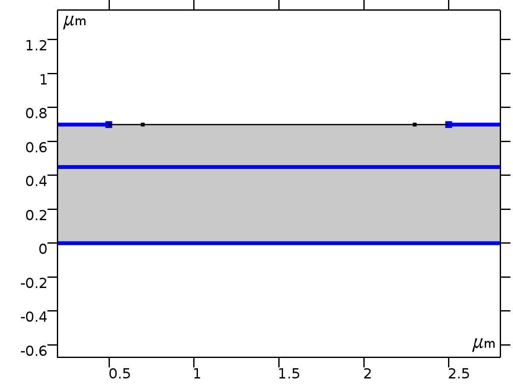
| Description | Value |
|---|---|
| Calibrate for | Semiconductor |
| Maximum element size | 0.0201 |
| Minimum element size | 0.003 |
| Curvature factor | 0.3 |
| Maximum element growth rate | 1.13 |
| Predefined size | Fine |
| Geometric entity level | Boundary |
| Selection | Boundary 7 |

| Description | Value |
|---|---|
| Calibrate for | Semiconductor |
| Maximum element size | 0.0012 |
| Minimum element size | 2.4E-4 |
| Curvature factor | 0.2 |
| Maximum element growth rate | 1.05 |
| Predefined size | Extremely fine |
| Geometric entity level | Domain |
| Selection | Remaining |
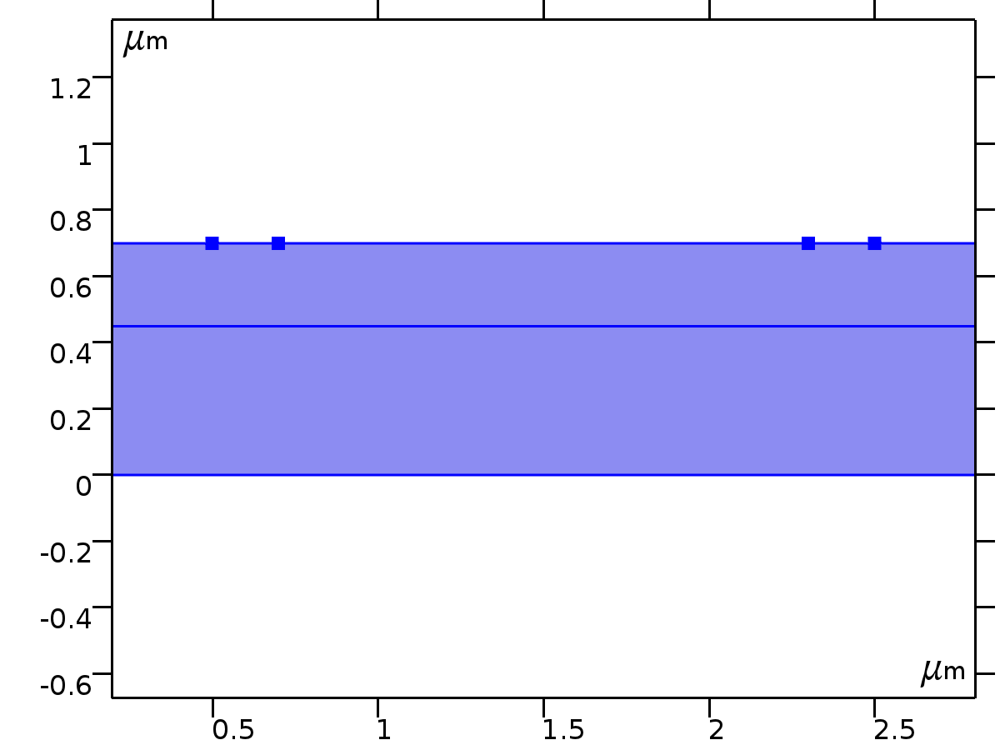
| Computation time | 13 min 42 s |
| CPU | AMD Ryzen 9 8940HX with Radeon Graphics, 16 cores |
| Operating system | Windows 10 |
| Description | Value |
|---|---|
| Sweep type | Specified combinations |
| Parameter name | tox |
| Parameter value list | range(5, 5, 30) |
| Unit | nm |
| Description | Value |
|---|---|
| Synchronize solutions | On |
| Description | Value |
|---|---|
| Number of simultaneous jobs | 4 |
| Description | Value |
|---|---|
| Include geometric nonlinearity | Off |
| Physics interface | Discretization |
|---|---|
| Semiconductor (semi) | physics |
| Geometry | Mesh |
|---|---|
| Geometry 1 (geom1) | mesh1 |
| Description | Value |
|---|---|
| Auxiliary sweep | On |
| Sweep type | All combinations |
| Parameter value list | {0.1, range(0, 0.5, -2) range(-2, 0.5, 4)} |
| Description | Value |
|---|---|
| Use study | 研究 3 |
| Use study step | Stationary |
| Description | Value |
|---|---|
| Defined by study step | Stationary |
| Description | Value |
|---|---|
| Parameter initial value list | {0.1[V], range(0, 0.5, -2)[V] range(-2, 0.5, 4)[V]} |
| Description | Value |
|---|---|
| Field components | comp1.Ne |
| Description | Value |
|---|---|
| Field components | comp1.Ph |
| Description | Value |
|---|---|
| Field components | comp1.V |
| Description | Value |
|---|---|
| Defined by study step | Stationary |
| Relative tolerance | 1.0E-6 |
| Description | Value |
|---|---|
| Probes | None |
| Description | Value |
|---|---|
| Defined by study step | Stationary |
| Sweep type | All combinations |
| Parameter value list | {0.1, range(0, 0.5, -2) range(-2, 0.5, 4)} |
| Description | Value |
|---|---|
| Predictor | Constant |
| Description | Value |
|---|---|
| Linear solver | 直接 1 |
| Description | Value |
|---|---|
| Initial damping factor | 0.1 |
| Recovery damping factor | 0.001 |
| Maximum number of iterations | 50 |
| Description | Value |
|---|---|
| Out-of-core | Off |
| Description | Value |
|---|---|
| Check error estimate | No |
| Description | Value |
|---|---|
| Solution | tox=5 |
| Description | Value |
|---|---|
| Solution | tox=10 |
| Description | Value |
|---|---|
| Solution | tox=15 |
| Description | Value |
|---|---|
| Solution | tox=20 |
| Description | Value |
|---|---|
| Solution | tox=25 |
| Description | Value |
|---|---|
| Solution | tox=30 |
| Description | Value |
|---|---|
| Solution | 解 8 |
| Component | Geometry 1 |
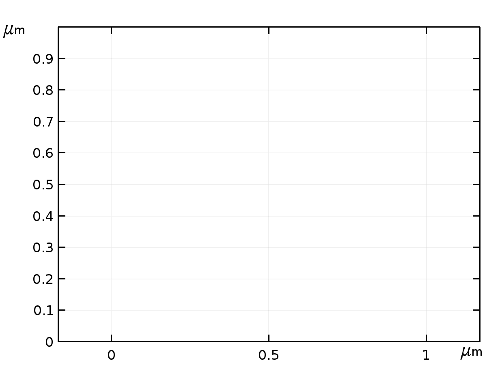
| Description | Value |
|---|---|
| Solution | 參數解 2 |
| Component | Save Point Geometry 1 |
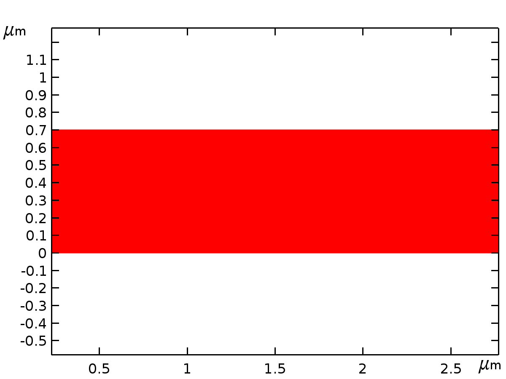
| Description | Value |
|---|---|
| Data set | 研究 3/參數解 2 |
| Description | Value |
|---|---|
| Line entry method | Two points |
| Points | {{1.5, 0.7}, {1.5, 0.45}} |
| Description | Value |
|---|---|
| Space variable | cln1x |
| Normal variables | {cln1nx, cln1ny} |
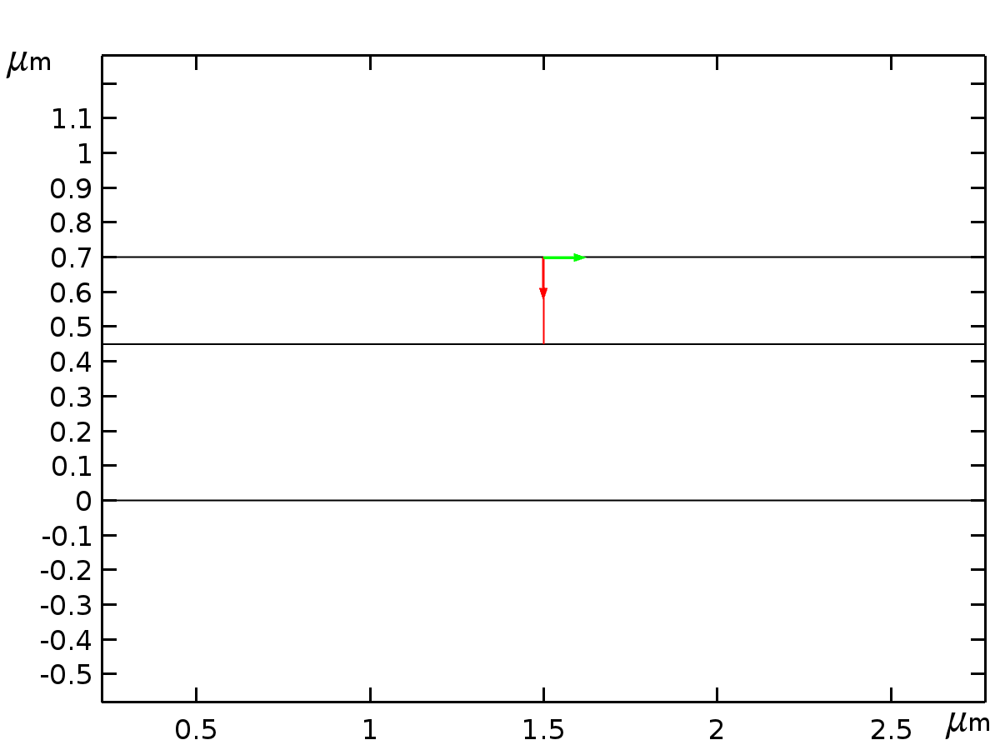
| Description | Value |
|---|---|
| Data set | 研究 3/參數解 2 |
| Description | Value |
|---|---|
| Entry method | Coordinates |
| Description | Value |
|---|---|
| X | 1.5 |
| Y | 0.699 |
Data set: Surface Potential Point
| Description | Value |
|---|---|
| Data set | 研究 3/參數解 2 |
| Description | Value |
|---|---|
| Entry method | Coordinates |
| Description | Value |
|---|---|
| X | 1.5 |
| Y | 0.05 |
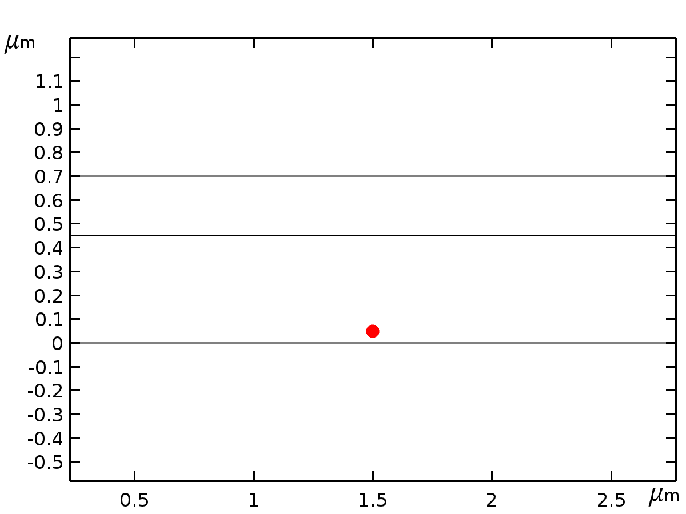
Data set: Bulk Potential Point
| Description | Value |
|---|---|
| Data set | 研究 3/參數解 2 |
| Description | Value |
|---|---|
| Entry method | Coordinates |
| Description | Value |
|---|---|
| X | 1.5 |
| Y | 0.7 |
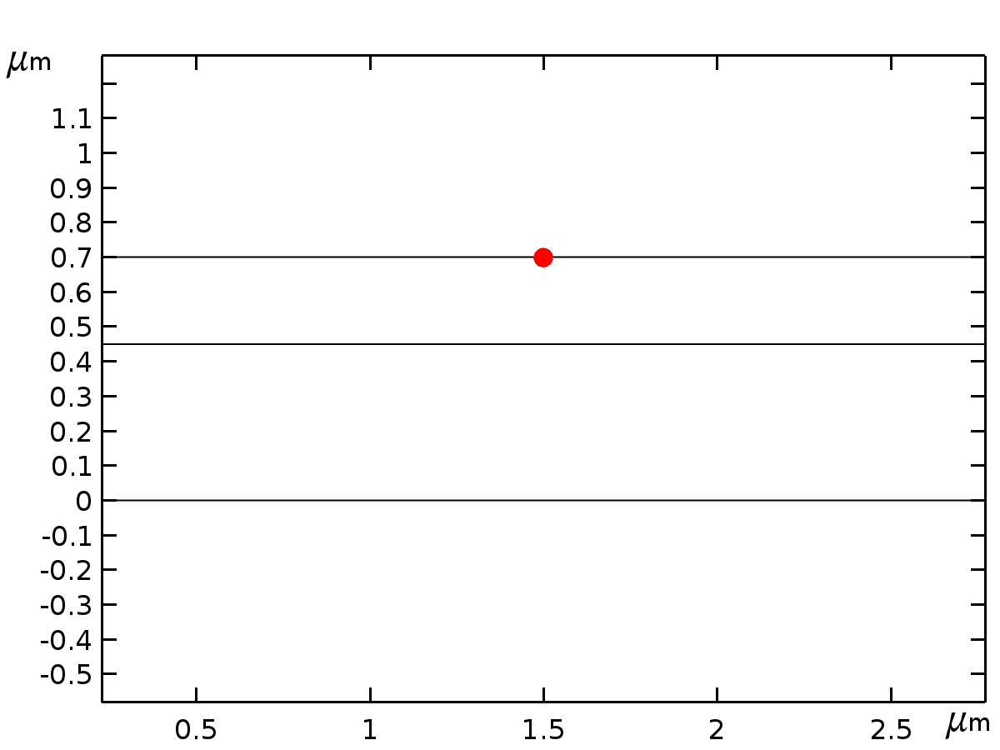
Data set: Oxide Field at Gate Center
| Description | Value |
|---|---|
| Data set | Vertical line |
| Expression | Unit | Description |
|---|---|---|
| -e_const*semi.N | C/m^2 |
| Description | Value |
|---|---|
| Data set | Vertical line |
| Expression | Unit | Description |
|---|---|---|
| e_const*semi.P | C/m^2 |
| Description | Value |
|---|---|
| Data set | Surface Potential Point |
| Expression | Unit | Description |
|---|---|---|
| V | V | 電位 |
| Description | Value |
|---|---|
| Data set | Bulk Potential Point |
| Expression | Unit | Description |
|---|---|---|
| V | V | 電位 |
| Description | Value |
|---|---|
| Data set | 研究 3/參數解 2 |
| Expression | Unit | Description |
|---|---|---|
| semi.I0_2 | uA | 終端電流 |
| Geometric entity level | Boundary |
| Selection | Boundary 7 |
| Description | Value |
|---|---|
| Data set | 研究 3/參數解 2 |
| Expression | Unit | Description |
|---|---|---|
| abs(nx*semi.DX+ny*semi.DY)/(epsilon0_const*3.9) | MV/cm |
| Description | Value |
|---|---|
| Data set | Oxide Field at Gate Center |
| Expression | Unit | Description |
|---|---|---|
| abs(semi.nE_ins) | MV/cm |
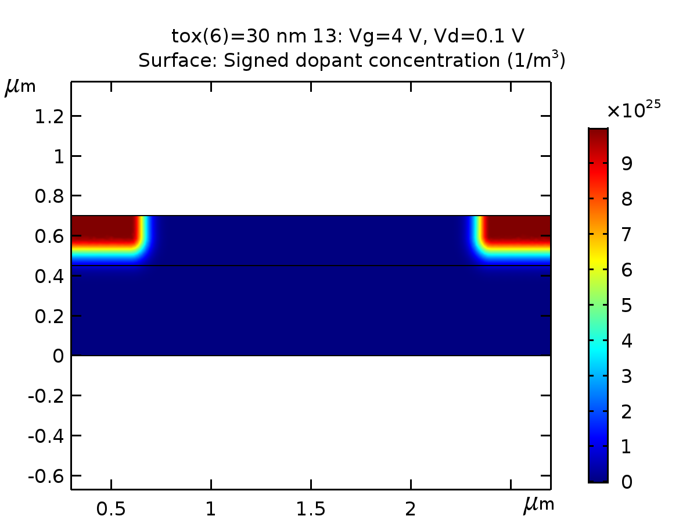
tox(6)=30 nm 13: Vg=4 V, Vd=0.1 V Surface: Signed dopant concentration (1/m3)
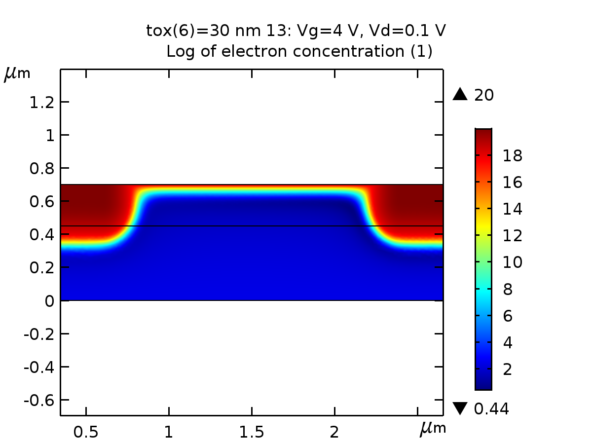
tox(6)=30 nm 13: Vg=4 V, Vd=0.1 V Log of electron concentration (1)
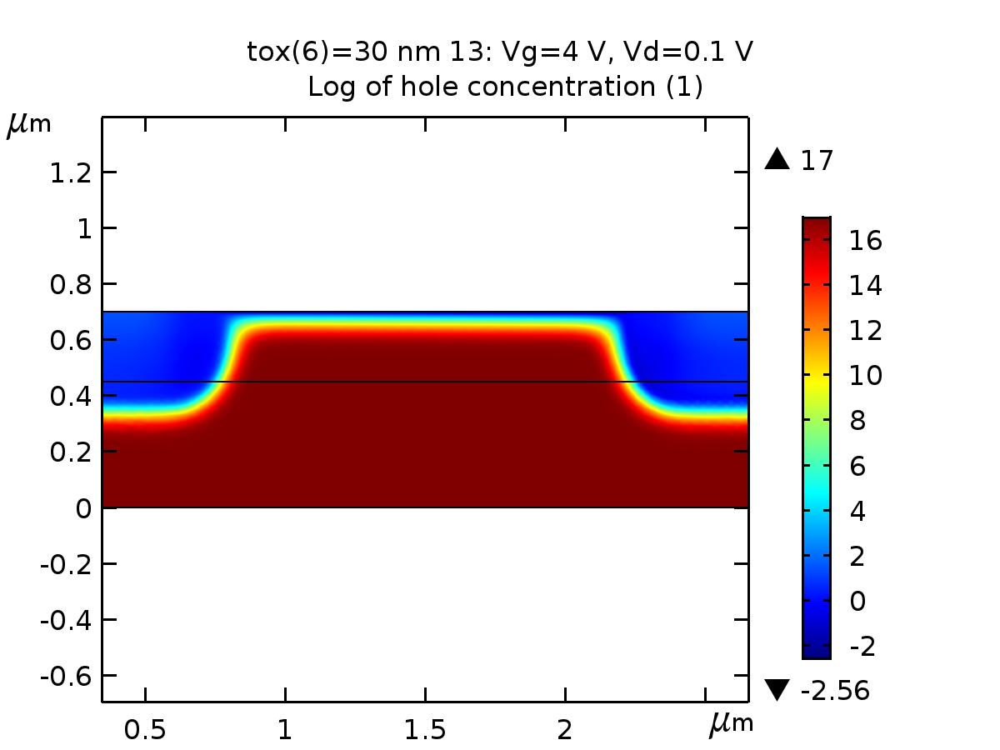
tox(6)=30 nm 13: Vg=4 V, Vd=0.1 V Log of hole concentration (1)
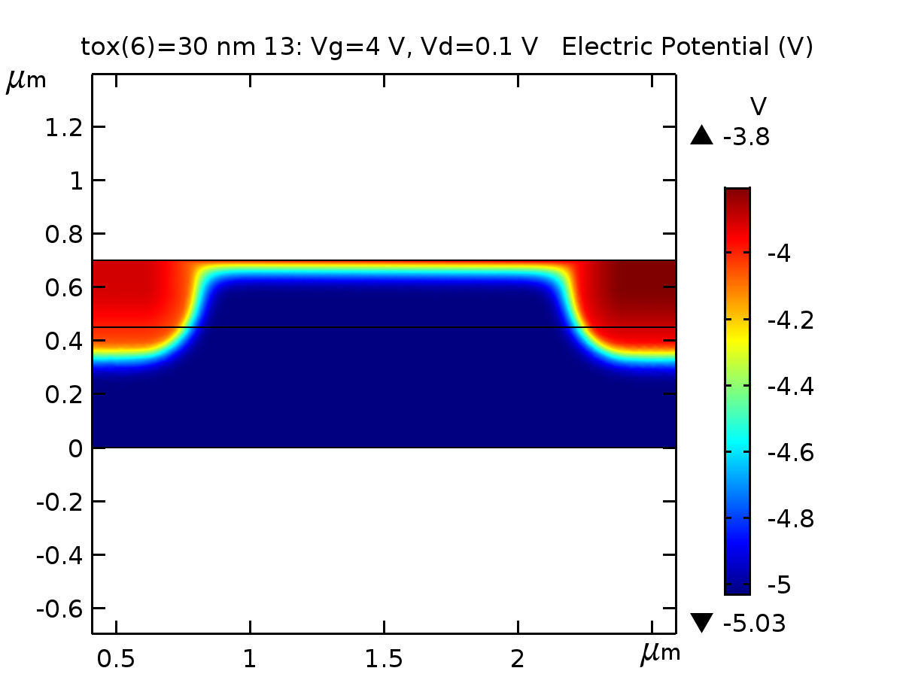
tox(6)=30 nm 13: Vg=4 V, Vd=0.1 V Electric Potential (V)
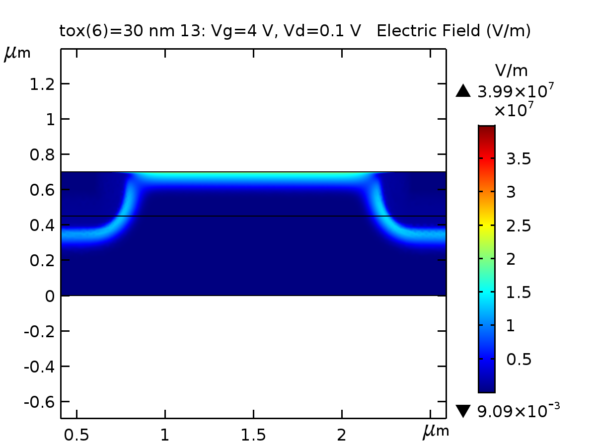
tox(6)=30 nm 13: Vg=4 V, Vd=0.1 V Electric Field (V/m)
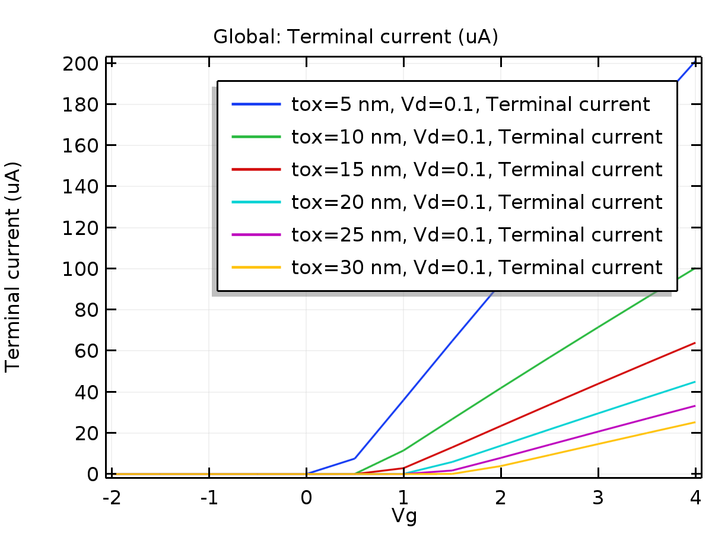
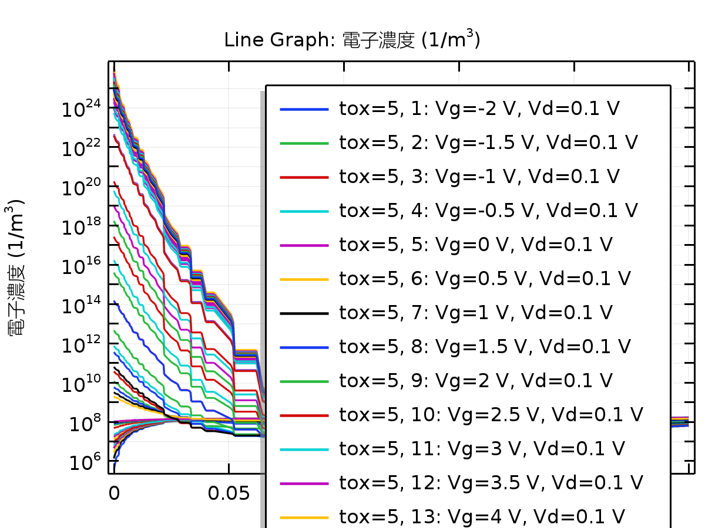
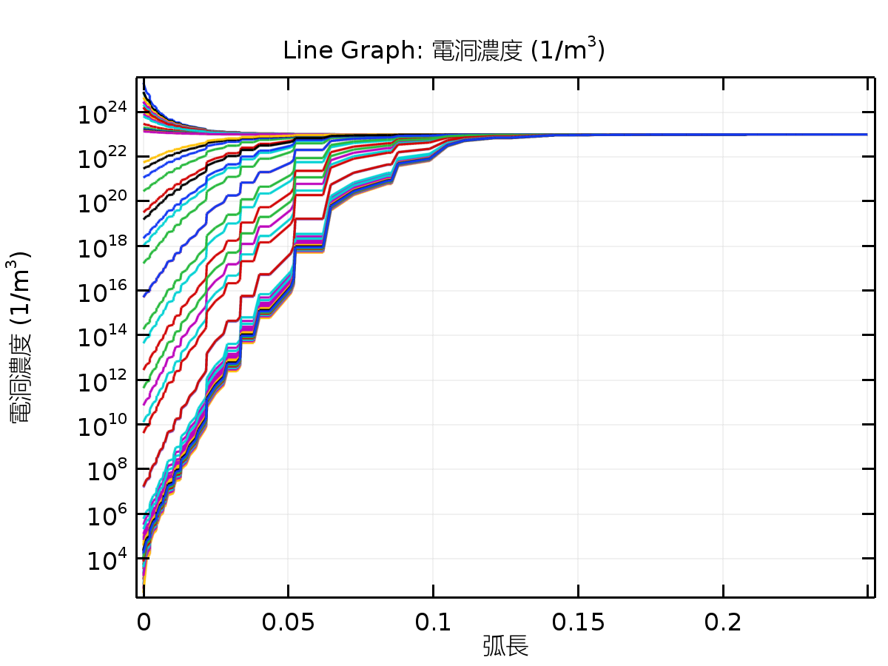